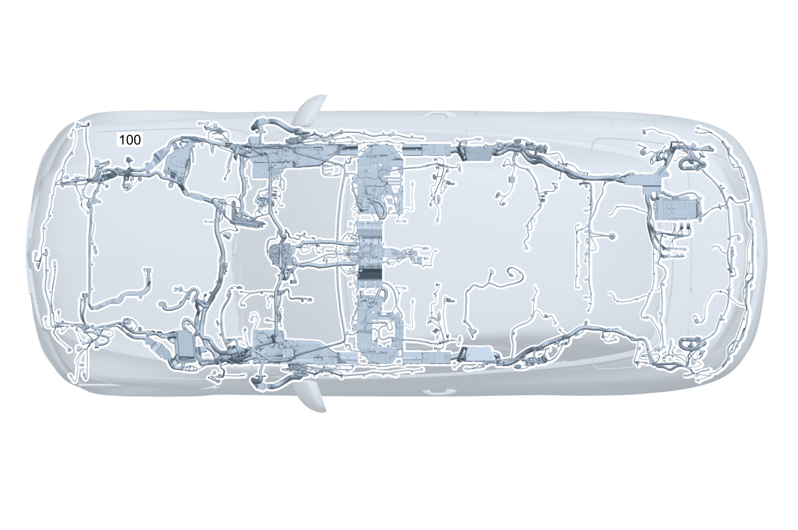

| № | Артикул | Название | Кол. | Примечание | Ограничение |
|---|---|---|---|---|---|
| 100 | A 205 540 21 12 | Электрический жгут (ELECTRICAL WIRING HARNESS) | 1 | Основной жгут электропроводки системы рамы и пола [001660] В ЖГУТЕ ЭЛЕКТРОПРОВОДКИ ИМЕЮТСЯ СООТВЕТСТВ. СПЕЦ.ИСПОЛНЕНИЯ СОГЛАСНО ЗАВОДСКОМУ НОМЕРУ АВТОМОБИЛЯ [622] ПРИ ЗАКАЗЕ УКАЗАТЬ ИДЕНТ.№ | |
| 120 | Q 000000000002 | - Возможен заказ только отдельных компонентов жгута проводов | 1 | ESP®, базовый объем Рулевое управление: Влево | |
| 120 | Q 000000000002 | - Возможен заказ только отдельных компонентов жгута проводов | 1 | ESP®, базовый объем Рулевое управление: Вправо | |
| 120 | Q 000000000002 | - Возможен заказ только отдельных компонентов жгута проводов | 1 | Электронная система стабилизации движения (ESP®) Рулевое управление: Влево | |
| 120 | Q 000000000002 | - Возможен заказ только отдельных компонентов жгута проводов | 1 | Электронная система стабилизации движения (ESP®) Рулевое управление: Вправо | |
| 120 | Q 000000000002 | - Возможен заказ только отдельных компонентов жгута проводов | 1 | Блок управления ESP® Рулевое управление: Влево | |
| 120 | Q 000000000002 | - Возможен заказ только отдельных компонентов жгута проводов | 1 | Блок управления ESP® Рулевое управление: Вправо | |
| 120 | Q 000000000002 | - Возможен заказ только отдельных компонентов жгута проводов | 1 | Блок управления ESP® Рулевое управление: Влево | 809 |
| 120 | Q 000000000002 | - Возможен заказ только отдельных компонентов жгута проводов | 1 | Блок управления ESP® Рулевое управление: Влево | |
| 120 | Q 000000000002 | - Возможен заказ только отдельных компонентов жгута проводов | 1 | Блок управления ESP® Рулевое управление: Вправо | 809 |
| 120 | Q 000000000002 | - Возможен заказ только отдельных компонентов жгута проводов | 1 | Блок управления ESP® Рулевое управление: Вправо | |
| 120 | Q 000000000002 | - Возможен заказ только отдельных компонентов жгута проводов | 1 | Пневмоподвеска Рулевое управление: Влево | 489 |
| 120 | Q 000000000002 | - Возможен заказ только отдельных компонентов жгута проводов | 1 | Пневмоподвеска Рулевое управление: Вправо | 489 |
| 120 | Q 000000000002 | - Возможен заказ только отдельных компонентов жгута проводов | 1 | Система адаптивной амортизации (ADS) Рулевое управление: Влево | 809+459 |
| 120 | Q 000000000002 | - Возможен заказ только отдельных компонентов жгута проводов | 1 | Система адаптивной амортизации (ADS) Рулевое управление: Влево | 459 |
| 120 | Q 000000000002 | - Возможен заказ только отдельных компонентов жгута проводов | 1 | Система адаптивной амортизации (ADS) Рулевое управление: Вправо | 809+459 |
| 120 | Q 000000000002 | - Возможен заказ только отдельных компонентов жгута проводов | 1 | Система адаптивной амортизации (ADS) Рулевое управление: Вправо | 459 |
| 120 | Q 000000000002 | - Возможен заказ только отдельных компонентов жгута проводов | 1 | Аварийный натяжитель ремня безопасности, PRE\-SAFE® Рулевое управление: Влево | |
| 120 | Q 000000000002 | - Возможен заказ только отдельных компонентов жгута проводов | 1 | Аварийный натяжитель ремня безопасности, PRE\-SAFE® Рулевое управление: Вправо | |
| 120 | Q 000000000002 | - Возможен заказ только отдельных компонентов жгута проводов | 1 | Аварийный натяжитель ремня безопасности, PRE\-SAFE® Рулевое управление: Влево | 299 |
| 120 | Q 000000000002 | - Возможен заказ только отдельных компонентов жгута проводов | 1 | Аварийный натяжитель ремня безопасности, PRE\-SAFE® Рулевое управление: Вправо | 299 |
| 120 | Q 000000000002 | - Возможен заказ только отдельных компонентов жгута проводов | 1 | Аварийный натяжитель ремня безопасности, PRE\-SAFE® Рулевое управление: Влево | 299+(460/494) |
| 120 | Q 000000000002 | - Возможен заказ только отдельных компонентов жгута проводов | 1 | Аварийный натяжитель ремня безопасности, PRE\-SAFE® Рулевое управление: Влево | 809 |
| 120 | Q 000000000002 | - Возможен заказ только отдельных компонентов жгута проводов | 1 | Аварийный натяжитель ремня безопасности, PRE\-SAFE® Рулевое управление: Влево | |
| 120 | Q 000000000002 | - Возможен заказ только отдельных компонентов жгута проводов | 1 | Аварийный натяжитель ремня безопасности, PRE\-SAFE® Рулевое управление: Вправо | 809 |
| 120 | Q 000000000002 | - Возможен заказ только отдельных компонентов жгута проводов | 1 | Аварийный натяжитель ремня безопасности, PRE\-SAFE® Рулевое управление: Вправо | |
| 120 | Q 000000000002 | - Возможен заказ только отдельных компонентов жгута проводов | 1 | Аварийный натяжитель ремня безопасности, PRE\-SAFE® Рулевое управление: Влево | 809+299 |
| 120 | Q 000000000002 | - Возможен заказ только отдельных компонентов жгута проводов | 1 | Аварийный натяжитель ремня безопасности, PRE\-SAFE® Рулевое управление: Влево | 299 |
| 120 | Q 000000000002 | - Возможен заказ только отдельных компонентов жгута проводов | 1 | Аварийный натяжитель ремня безопасности, PRE\-SAFE® Рулевое управление: Вправо | 809+299 |
| 120 | Q 000000000002 | - Возможен заказ только отдельных компонентов жгута проводов | 1 | Аварийный натяжитель ремня безопасности, PRE\-SAFE® Рулевое управление: Вправо | 299 |
| 120 | Q 000000000002 | - Возможен заказ только отдельных компонентов жгута проводов | 1 | Аварийный натяжитель ремня безопасности, PRE\-SAFE® Рулевое управление: Влево | 809+299+(460/494) |
| 120 | Q 000000000002 | - Возможен заказ только отдельных компонентов жгута проводов | 1 | Аварийный натяжитель ремня безопасности, PRE\-SAFE® Рулевое управление: Влево | 299+(460/494) |
| 120 | Q 000000000002 | - Возможен заказ только отдельных компонентов жгута проводов | 1 | Защита пешеходов Рулевое управление: Влево | U60 |
| 120 | Q 000000000002 | - Возможен заказ только отдельных компонентов жгута проводов | 1 | Защита пешеходов Рулевое управление: Влево | 809+U60 |
| 120 | Q 000000000002 | - Возможен заказ только отдельных компонентов жгута проводов | 1 | Защита пешеходов Рулевое управление: Влево | U60 |
| 120 | Q 000000000002 | - Возможен заказ только отдельных компонентов жгута проводов | 1 | Защита пешеходов Рулевое управление: Вправо | U60 |
| 120 | Q 000000000002 | - Возможен заказ только отдельных компонентов жгута проводов | 1 | Защита пешеходов Рулевое управление: Вправо | 809+U60 |
| 120 | Q 000000000002 | - Возможен заказ только отдельных компонентов жгута проводов | 1 | Защита пешеходов Рулевое управление: Вправо | U60 |
| 120 | Q 000000000002 | - Возможен заказ только отдельных компонентов жгута проводов | 1 | Система центральной блокировки замков Рулевое управление: Влево | |
| 120 | Q 000000000002 | - Возможен заказ только отдельных компонентов жгута проводов | 1 | Система центральной блокировки замков Рулевое управление: Вправо | |
| 120 | Q 000000000002 | - Возможен заказ только отдельных компонентов жгута проводов | 1 | Система контроля давления в шинах (RDK) Рулевое управление: Влево | 475 |
| 120 | Q 000000000002 | - Возможен заказ только отдельных компонентов жгута проводов | 1 | Система контроля давления в шинах (RDK) Рулевое управление: Вправо | 475 |
| 120 | Q 000000000002 | - Возможен заказ только отдельных компонентов жгута проводов | 1 | Противовзломно\-противоугонная система и система охраны салона Рулевое управление: Влево | 882+551+(421/427) |
| 120 | Q 000000000002 | - Возможен заказ только отдельных компонентов жгута проводов | 1 | Противовзломно\-противоугонная система и система охраны салона Рулевое управление: Вправо | 882+551+(421/427) |
| 120 | Q 000000000002 | - Возможен заказ только отдельных компонентов жгута проводов | 1 | Противовзломно\-противоугонная система и система охраны салона Рулевое управление: Влево | 882+551+425 |
| 120 | Q 000000000002 | - Возможен заказ только отдельных компонентов жгута проводов | 1 | Противовзломно\-противоугонная система и система охраны салона Рулевое управление: Вправо | 882+551+425 |
| 120 | Q 000000000002 | - Возможен заказ только отдельных компонентов жгута проводов | 1 | Система противоугонной сигнализации | 551 |
| 120 | Q 000000000002 | - Возможен заказ только отдельных компонентов жгута проводов | 1 | Противовзломно\-противоугонная система и система охраны салона Рулевое управление: Влево | 809+882+551 |
| 120 | Q 000000000002 | - Возможен заказ только отдельных компонентов жгута проводов | 1 | Противовзломно\-противоугонная система и система охраны салона Рулевое управление: Влево | 882+551 |
| 120 | Q 000000000002 | - Возможен заказ только отдельных компонентов жгута проводов | 1 | Противовзломно\-противоугонная система и система охраны салона Рулевое управление: Влево | 802+882+551 |
| 120 | Q 000000000002 | - Возможен заказ только отдельных компонентов жгута проводов | 1 | Противовзломно\-противоугонная система и система охраны салона Рулевое управление: Влево | 882+551 |
| 120 | Q 000000000002 | - Возможен заказ только отдельных компонентов жгута проводов | 1 | Противовзломно\-противоугонная система и система охраны салона Рулевое управление: Вправо | 809+882+551 |
| 120 | Q 000000000002 | - Возможен заказ только отдельных компонентов жгута проводов | 1 | Противовзломно\-противоугонная система и система охраны салона Рулевое управление: Вправо | 882+551 |
| 120 | Q 000000000002 | - Возможен заказ только отдельных компонентов жгута проводов | 1 | Противовзломно\-противоугонная система и система охраны салона Рулевое управление: Вправо | 802+882+551 |
| 120 | Q 000000000002 | - Возможен заказ только отдельных компонентов жгута проводов | 1 | Противовзломно\-противоугонная система и система охраны салона Рулевое управление: Вправо | 882+551 |
| 120 | Q 000000000002 | - Возможен заказ только отдельных компонентов жгута проводов | 1 | Система противоугонной сигнализации | 809+551 |
| 120 | Q 000000000002 | - Возможен заказ только отдельных компонентов жгута проводов | 1 | Система противоугонной сигнализации | 551 |
| 120 | Q 000000000002 | - Возможен заказ только отдельных компонентов жгута проводов | 1 | Прикуриватель | 809 |
| 120 | Q 000000000002 | - Возможен заказ только отдельных компонентов жгута проводов | 1 | Прикуриватель | |
| 120 | Q 000000000002 | - Возможен заказ только отдельных компонентов жгута проводов | 1 | Электрическое штекерное соединение переднего моста, левый распределитель | |
| 120 | Q 000000000002 | - Возможен заказ только отдельных компонентов жгута проводов | 1 | Электрическое штекерное соединение переднего моста, левый распределитель | 640/641/642/488/459/489 |
| 120 | Q 000000000002 | - Возможен заказ только отдельных компонентов жгута проводов | 1 | Электрическое штекерное соединение переднего моста, правый распределитель | |
| 120 | Q 000000000002 | - Возможен заказ только отдельных компонентов жгута проводов | 1 | Электрическое штекерное соединение переднего моста, правый распределитель | 488/459/489 |
| 120 | Q 000000000002 | - Возможен заказ только отдельных компонентов жгута проводов | 1 | Датчик АКБ Рулевое управление: Влево | |
| 120 | Q 000000000002 | - Возможен заказ только отдельных компонентов жгута проводов | 1 | Датчик АКБ Рулевое управление: Вправо | |
| 120 | Q 000000000002 | - Возможен заказ только отдельных компонентов жгута проводов | 1 | Датчик АКБ Рулевое управление: Влево | U98 |
| 120 | Q 000000000002 | - Возможен заказ только отдельных компонентов жгута проводов | 1 | Датчик АКБ Рулевое управление: Вправо | U98 |
| 120 | Q 000000000002 | - Возможен заказ только отдельных компонентов жгута проводов | 1 | Датчик АКБ Рулевое управление: Вправо | 809 |
| 120 | Q 000000000002 | - Возможен заказ только отдельных компонентов жгута проводов | 1 | Датчик АКБ Рулевое управление: Вправо | |
| 120 | Q 000000000002 | - Возможен заказ только отдельных компонентов жгута проводов | 1 | Датчик АКБ Рулевое управление: Вправо | 809+U98 |
| 120 | Q 000000000002 | - Возможен заказ только отдельных компонентов жгута проводов | 1 | Датчик АКБ Рулевое управление: Вправо | U98 |
| 120 | Q 000000000002 | - Возможен заказ только отдельных компонентов жгута проводов | 1 | Прикуриватель с подсветкой пепельницы спереди Рулевое управление: Влево | |
| 120 | Q 000000000002 | - Возможен заказ только отдельных компонентов жгута проводов | 1 | Прикуриватель с подсветкой пепельницы спереди Рулевое управление: Вправо | |
| 120 | Q 000000000002 | - Возможен заказ только отдельных компонентов жгута проводов | 1 | Прикуриватель с подсветкой пепельницы спереди Рулевое управление: Влево | 809 |
| 120 | Q 000000000002 | - Возможен заказ только отдельных компонентов жгута проводов | 1 | Прикуриватель с подсветкой пепельницы спереди Рулевое управление: Влево | |
| 120 | Q 000000000002 | - Возможен заказ только отдельных компонентов жгута проводов | 1 | Прикуриватель с подсветкой пепельницы спереди Рулевое управление: Вправо | 809 |
| 120 | Q 000000000002 | - Возможен заказ только отдельных компонентов жгута проводов | 1 | Прикуриватель с подсветкой пепельницы спереди Рулевое управление: Вправо | |
| 120 | Q 000000000002 | - Возможен заказ только отдельных компонентов жгута проводов | 1 | Беспроводная зарядка телефона в передней части салона Рулевое управление: Влево | 809+(897/899) |
| 120 | Q 000000000002 | - Возможен заказ только отдельных компонентов жгута проводов | 1 | Беспроводная зарядка телефона в передней части салона Рулевое управление: Влево | 897/899 |
| 120 | Q 000000000002 | - Возможен заказ только отдельных компонентов жгута проводов | 1 | Механизм аварийной разблокировки крышки багажника Рулевое управление: Влево | 460/494 |
| 120 | Q 000000000002 | - Возможен заказ только отдельных компонентов жгута проводов | 1 | Механизм аварийной разблокировки крышки багажника Рулевое управление: Влево | 809+(460/494) |
| 120 | Q 000000000002 | - Возможен заказ только отдельных компонентов жгута проводов | 1 | Механизм аварийной разблокировки крышки багажника Рулевое управление: Влево | 460/494 |
| 120 | Q 000000000002 | - Возможен заказ только отдельных компонентов жгута проводов | 1 | Перегородка багажника | 4U9 |
| 120 | Q 000000000002 | - Возможен заказ только отдельных компонентов жгута проводов | 1 | Перегородка багажника | 809+4U9 |
| 120 | Q 000000000002 | - Возможен заказ только отдельных компонентов жгута проводов | 1 | Перегородка багажника | 4U9 |
| 120 | Q 000000000002 | - Возможен заказ только отдельных компонентов жгута проводов | 1 | Выключатель замка ремня безопасности слева Рулевое управление: Влево | |
| 120 | Q 000000000002 | - Возможен заказ только отдельных компонентов жгута проводов | 1 | Выключатель замка ремня безопасности слева Рулевое управление: Вправо | |
| 120 | Q 000000000002 | - Возможен заказ только отдельных компонентов жгута проводов | 1 | Выключатель замка ремня безопасности слева Рулевое управление: Влево | 221/275 |
| 120 | Q 000000000002 | - Возможен заказ только отдельных компонентов жгута проводов | 1 | Выключатель замка ремня безопасности слева Рулевое управление: Вправо | 221/241 |
| 120 | Q 000000000002 | - Возможен заказ только отдельных компонентов жгута проводов | 1 | Выключатель замка ремня безопасности справа Рулевое управление: Влево | |
| 120 | Q 000000000002 | - Возможен заказ только отдельных компонентов жгута проводов | 1 | Выключатель замка ремня безопасности справа Рулевое управление: Вправо | |
| 120 | Q 000000000002 | - Возможен заказ только отдельных компонентов жгута проводов | 1 | Выключатель замка ремня безопасности справа Рулевое управление: Влево | 222/242/455 |
| 120 | Q 000000000002 | - Возможен заказ только отдельных компонентов жгута проводов | 1 | Выключатель замка ремня безопасности справа Рулевое управление: Вправо | 222/275 |
| 120 | Q 000000000002 | - Возможен заказ только отдельных компонентов жгута проводов | 1 | Подушка безопасности (фронтальная) Рулевое управление: Влево | (460/494)+(221/222/242/275/455) |
| 120 | Q 000000000002 | - Возможен заказ только отдельных компонентов жгута проводов | 1 | Подушка безопасности (фронтальная) Рулевое управление: Влево | 809+(460/494)+(221/222/242/275/455) |
| 120 | Q 000000000002 | - Возможен заказ только отдельных компонентов жгута проводов | 1 | Подушка безопасности (фронтальная) Рулевое управление: Влево | (460/494)+(221/222/242/275/455) |
| 120 | Q 000000000002 | - Возможен заказ только отдельных компонентов жгута проводов | 1 | Замок ремня безопасности, заднее сиденье | U01 |
| 120 | Q 000000000002 | - Возможен заказ только отдельных компонентов жгута проводов | 1 | Оконная подушка безопасности Рулевое управление: Влево | |
| 120 | Q 000000000002 | - Возможен заказ только отдельных компонентов жгута проводов | 1 | Оконная подушка безопасности Рулевое управление: Вправо | |
| 120 | Q 000000000002 | - Возможен заказ только отдельных компонентов жгута проводов | 1 | Оконная подушка безопасности Рулевое управление: Влево | 809 |
| 120 | Q 000000000002 | - Возможен заказ только отдельных компонентов жгута проводов | 1 | Оконная подушка безопасности Рулевое управление: Влево | |
| 120 | Q 000000000002 | - Возможен заказ только отдельных компонентов жгута проводов | 1 | Оконная подушка безопасности Рулевое управление: Вправо | 809 |
| 120 | Q 000000000002 | - Возможен заказ только отдельных компонентов жгута проводов | 1 | Оконная подушка безопасности Рулевое управление: Вправо | |
| 120 | Q 000000000002 | - Возможен заказ только отдельных компонентов жгута проводов | 1 | Выключатель замка ремня безопасности слева Рулевое управление: Влево | 809 |
| 120 | Q 000000000002 | - Возможен заказ только отдельных компонентов жгута проводов | 1 | Выключатель замка ремня безопасности слева Рулевое управление: Влево | |
| 120 | Q 000000000002 | - Возможен заказ только отдельных компонентов жгута проводов | 1 | Выключатель замка ремня безопасности слева Рулевое управление: Вправо | 809 |
| 120 | Q 000000000002 | - Возможен заказ только отдельных компонентов жгута проводов | 1 | Выключатель замка ремня безопасности слева Рулевое управление: Вправо | |
| 120 | Q 000000000002 | - Возможен заказ только отдельных компонентов жгута проводов | 1 | Выключатель замка ремня безопасности слева Рулевое управление: Влево | 809+(275/221) |
| 120 | Q 000000000002 | - Возможен заказ только отдельных компонентов жгута проводов | 1 | Выключатель замка ремня безопасности слева Рулевое управление: Влево | 275/221 |
| 120 | Q 000000000002 | - Возможен заказ только отдельных компонентов жгута проводов | 1 | Выключатель замка ремня безопасности слева Рулевое управление: Вправо | 809+(241/221/455) |
| 120 | Q 000000000002 | - Возможен заказ только отдельных компонентов жгута проводов | 1 | Выключатель замка ремня безопасности слева Рулевое управление: Вправо | 241/221/455 |
| 120 | Q 000000000002 | - Возможен заказ только отдельных компонентов жгута проводов | 1 | Выключатель замка ремня безопасности справа Рулевое управление: Влево | 809 |
| 120 | Q 000000000002 | - Возможен заказ только отдельных компонентов жгута проводов | 1 | Выключатель замка ремня безопасности справа Рулевое управление: Влево | |
| 120 | Q 000000000002 | - Возможен заказ только отдельных компонентов жгута проводов | 1 | Выключатель замка ремня безопасности справа Рулевое управление: Вправо | 809 |
| 120 | Q 000000000002 | - Возможен заказ только отдельных компонентов жгута проводов | 1 | Выключатель замка ремня безопасности справа Рулевое управление: Вправо | |
| 120 | Q 000000000002 | - Возможен заказ только отдельных компонентов жгута проводов | 1 | Выключатель замка ремня безопасности справа Рулевое управление: Влево | 809+(242/222/455) |
| 120 | Q 000000000002 | - Возможен заказ только отдельных компонентов жгута проводов | 1 | Выключатель замка ремня безопасности справа Рулевое управление: Влево | 242/222/455 |
| 120 | Q 000000000002 | - Возможен заказ только отдельных компонентов жгута проводов | 1 | Выключатель замка ремня безопасности справа Рулевое управление: Вправо | 809+(275/222) |
| 120 | Q 000000000002 | - Возможен заказ только отдельных компонентов жгута проводов | 1 | Выключатель замка ремня безопасности справа Рулевое управление: Вправо | 275/222 |
| 120 | Q 000000000002 | - Возможен заказ только отдельных компонентов жгута проводов | 1 | Замок ремня безопасности, заднее сиденье | 809+U01 |
| 120 | Q 000000000002 | - Возможен заказ только отдельных компонентов жгута проводов | 1 | Замок ремня безопасности, заднее сиденье | U01 |
| 120 | Q 000000000002 | - Возможен заказ только отдельных компонентов жгута проводов | 1 | Фронтальный датчик ускорения спереди Рулевое управление: Влево | |
| 120 | Q 000000000002 | - Возможен заказ только отдельных компонентов жгута проводов | 1 | Фронтальный датчик ускорения спереди Рулевое управление: Вправо | |
| 120 | Q 000000000002 | - Возможен заказ только отдельных компонентов жгута проводов | 1 | Фронтальный датчик ускорения спереди Рулевое управление: Влево | 809 |
| 120 | Q 000000000002 | - Возможен заказ только отдельных компонентов жгута проводов | 1 | Фронтальный датчик ускорения спереди Рулевое управление: Влево | |
| 120 | Q 000000000002 | - Возможен заказ только отдельных компонентов жгута проводов | 1 | Фронтальный датчик ускорения спереди Рулевое управление: Вправо | 809 |
| 120 | Q 000000000002 | - Возможен заказ только отдельных компонентов жгута проводов | 1 | Фронтальный датчик ускорения спереди Рулевое управление: Вправо | |
| 120 | Q 000000000002 | - Возможен заказ только отдельных компонентов жгута проводов | 1 | Боковая подушка безопасности впереди слева Рулевое управление: Влево | |
| 120 | Q 000000000002 | - Возможен заказ только отдельных компонентов жгута проводов | 1 | Боковая подушка безопасности впереди слева Рулевое управление: Вправо | |
| 120 | Q 000000000002 | - Возможен заказ только отдельных компонентов жгута проводов | 1 | Боковая подушка безопасности впереди слева Рулевое управление: Влево | 275 |
| 120 | Q 000000000002 | - Возможен заказ только отдельных компонентов жгута проводов | 1 | Боковая подушка безопасности впереди слева Рулевое управление: Вправо | 241 |
| 120 | Q 000000000002 | - Возможен заказ только отдельных компонентов жгута проводов | 1 | Боковая подушка безопасности впереди слева Рулевое управление: Влево | 809 |
| 120 | Q 000000000002 | - Возможен заказ только отдельных компонентов жгута проводов | 1 | Боковая подушка безопасности впереди слева Рулевое управление: Влево | |
| 120 | Q 000000000002 | - Возможен заказ только отдельных компонентов жгута проводов | 1 | Боковая подушка безопасности впереди слева Рулевое управление: Вправо | 809 |
| 120 | Q 000000000002 | - Возможен заказ только отдельных компонентов жгута проводов | 1 | Боковая подушка безопасности впереди слева Рулевое управление: Вправо | |
| 120 | Q 000000000002 | - Возможен заказ только отдельных компонентов жгута проводов | 1 | Боковая подушка безопасности впереди слева Рулевое управление: Влево | 809+(275/221) |
| 120 | Q 000000000002 | - Возможен заказ только отдельных компонентов жгута проводов | 1 | Боковая подушка безопасности впереди слева Рулевое управление: Влево | 275/221 |
| 120 | Q 000000000002 | - Возможен заказ только отдельных компонентов жгута проводов | 1 | Боковая подушка безопасности впереди слева Рулевое управление: Вправо | 809+(241/221/455) |
| 120 | Q 000000000002 | - Возможен заказ только отдельных компонентов жгута проводов | 1 | Боковая подушка безопасности впереди слева Рулевое управление: Вправо | 241/221/455 |
| 120 | Q 000000000002 | - Возможен заказ только отдельных компонентов жгута проводов | 1 | Боковая подушка безопасности впереди справа Рулевое управление: Влево | |
| 120 | Q 000000000002 | - Возможен заказ только отдельных компонентов жгута проводов | 1 | Боковая подушка безопасности впереди справа Рулевое управление: Вправо | |
| 120 | Q 000000000002 | - Возможен заказ только отдельных компонентов жгута проводов | 1 | Боковая подушка безопасности впереди справа Рулевое управление: Влево | 242/455 |
| 120 | Q 000000000002 | - Возможен заказ только отдельных компонентов жгута проводов | 1 | Боковая подушка безопасности впереди справа Рулевое управление: Вправо | 275 |
| 120 | Q 000000000002 | - Возможен заказ только отдельных компонентов жгута проводов | 1 | Боковая подушка безопасности впереди справа Рулевое управление: Влево | 809 |
| 120 | Q 000000000002 | - Возможен заказ только отдельных компонентов жгута проводов | 1 | Боковая подушка безопасности впереди справа Рулевое управление: Влево | |
| 120 | Q 000000000002 | - Возможен заказ только отдельных компонентов жгута проводов | 1 | Боковая подушка безопасности впереди справа Рулевое управление: Вправо | 809 |
| 120 | Q 000000000002 | - Возможен заказ только отдельных компонентов жгута проводов | 1 | Боковая подушка безопасности впереди справа Рулевое управление: Вправо | |
| 120 | Q 000000000002 | - Возможен заказ только отдельных компонентов жгута проводов | 1 | Боковая подушка безопасности впереди справа Рулевое управление: Влево | 809+(242/455/222) |
| 120 | Q 000000000002 | - Возможен заказ только отдельных компонентов жгута проводов | 1 | Боковая подушка безопасности впереди справа Рулевое управление: Влево | 242/455/222 |
| 120 | Q 000000000002 | - Возможен заказ только отдельных компонентов жгута проводов | 1 | Боковая подушка безопасности впереди справа Рулевое управление: Вправо | 809+(275/222) |
| 120 | Q 000000000002 | - Возможен заказ только отдельных компонентов жгута проводов | 1 | Боковая подушка безопасности впереди справа Рулевое управление: Вправо | 275/222 |
| 120 | Q 000000000002 | - Возможен заказ только отдельных компонентов жгута проводов | 1 | Боковая подушка безопасности (задняя) | 298/494/460 |
| 120 | Q 000000000002 | - Возможен заказ только отдельных компонентов жгута проводов | 1 | Боковая подушка безопасности (задняя) | 809+(298/494/460) |
| 120 | Q 000000000002 | - Возможен заказ только отдельных компонентов жгута проводов | 1 | Боковая подушка безопасности (задняя) | 298/494/460 |
| 120 | Q 000000000002 | - Возможен заказ только отдельных компонентов жгута проводов | 1 | Связь с сиденьем LIN | 873/401/221/222 |
| 120 | Q 000000000002 | - Возможен заказ только отдельных компонентов жгута проводов | 1 | Связь с сиденьем LIN | 809+(873/401/221/222) |
| 120 | Q 000000000002 | - Возможен заказ только отдельных компонентов жгута проводов | 1 | Связь с сиденьем LIN | 275+(873/401/221/222) |
| 120 | Q 000000000002 | - Возможен заказ только отдельных компонентов жгута проводов | 1 | Связь с сиденьем LIN | 809+275+(873/401/221/222) |
| 120 | Q 000000000002 | - Возможен заказ только отдельных компонентов жгута проводов | 1 | Связь с сиденьем LIN | (241/242/455)+(873/401/221/222) |
| 120 | Q 000000000002 | - Возможен заказ только отдельных компонентов жгута проводов | 1 | Связь с сиденьем LIN | 809+(241/242/455)+(873/401/221/222) |
| 120 | Q 000000000002 | - Возможен заказ только отдельных компонентов жгута проводов | 1 | Связь с сиденьем LIN | 01T/403/01T+403 |
| 120 | Q 000000000002 | - Возможен заказ только отдельных компонентов жгута проводов | 1 | Связь с сиденьем LIN | 809+(01T/403/01T+403) |
| 120 | Q 000000000002 | - Возможен заказ только отдельных компонентов жгута проводов | 1 | Связь с сиденьем LIN | 809+(873/401) |
| 120 | Q 000000000002 | - Возможен заказ только отдельных компонентов жгута проводов | 1 | Связь с сиденьем LIN | 873/401 |
| 120 | Q 000000000002 | - Возможен заказ только отдельных компонентов жгута проводов | 1 | Связь с сиденьем LIN | 809+403 |
| 120 | Q 000000000002 | - Возможен заказ только отдельных компонентов жгута проводов | 1 | Связь с сиденьем LIN | 403 |
| 120 | Q 000000000002 | - Возможен заказ только отдельных компонентов жгута проводов | 1 | Корпус кузова, шина данных CAN | (241/242/275/455/889/893/01T/U02) |
| 120 | Q 000000000002 | - Возможен заказ только отдельных компонентов жгута проводов | 1 | Корпус кузова, шина данных CAN | 809+(221/222/241/242/275) |
| 120 | Q 000000000002 | - Возможен заказ только отдельных компонентов жгута проводов | 1 | Корпус кузова, шина данных CAN | 221/222/241/242/275 |
| 120 | Q 000000000002 | - Возможен заказ только отдельных компонентов жгута проводов | 1 | Корпус кузова, шина данных CAN | 809+(01T/965/Z90/Z97) |
| 120 | Q 000000000002 | - Возможен заказ только отдельных компонентов жгута проводов | 1 | Корпус кузова, шина данных CAN | 01T/Z90/Z97 |
| 120 | Q 000000000002 | - Возможен заказ только отдельных компонентов жгута проводов | 1 | Корпус кузова, шина данных CAN | 01T/Z90 |
| 120 | Q 000000000002 | - Возможен заказ только отдельных компонентов жгута проводов | 1 | Шина данных CAN трансмиссии | |
| 120 | Q 000000000002 | - Возможен заказ только отдельных компонентов жгута проводов | 1 | Шина данных CAN трансмиссии | |
| 120 | Q 000000000002 | - Возможен заказ только отдельных компонентов жгута проводов | 1 | Штекерное соединение распределителя потенциалов шины данных CAN периферийного оборудования Рулевое управление: Влево | |
| 120 | Q 000000000002 | - Возможен заказ только отдельных компонентов жгута проводов | 1 | Штекерное соединение распределителя потенциалов шины данных CAN периферийного оборудования Рулевое управление: Влево | ((632/640/642)+((237+238+253)/234/476)+258+(476/513/608/628)/01T) |
| 120 | Q 000000000002 | - Возможен заказ только отдельных компонентов жгута проводов | 1 | Штекерное соединение распределителя потенциалов шины данных CAN периферийного оборудования Рулевое управление: Вправо | |
| 120 | Q 000000000002 | - Возможен заказ только отдельных компонентов жгута проводов | 1 | Штекерное соединение распределителя потенциалов шины данных CAN периферийного оборудования Рулевое управление: Вправо | ((631/641)+((237+238+253)/234/476)+258+(476/513/608/628)/01T) |
| 120 | Q 000000000002 | - Возможен заказ только отдельных компонентов жгута проводов | 1 | Пиропредохранитель Рулевое управление: Влево | 809+(M274/M654)+ME05 |
| 120 | Q 000000000002 | - Возможен заказ только отдельных компонентов жгута проводов | 1 | Пиропредохранитель Рулевое управление: Вправо | 809+(M274/M654)+ME05 |
| 120 | Q 000000000002 | - Возможен заказ только отдельных компонентов жгута проводов | 1 | Система распознавания занятости сиденья, система распознавания наличия детского сиденья Рулевое управление: Влево | |
| 120 | Q 000000000002 | - Возможен заказ только отдельных компонентов жгута проводов | 1 | Система распознавания занятости сиденья, система распознавания наличия детского сиденья Рулевое управление: Вправо | |
| 120 | Q 000000000002 | - Возможен заказ только отдельных компонентов жгута проводов | 1 | Система распознавания занятости сиденья, система распознавания наличия детского сиденья Рулевое управление: Влево | 222/242/455 |
| 120 | Q 000000000002 | - Возможен заказ только отдельных компонентов жгута проводов | 1 | Система распознавания занятости сиденья, система распознавания наличия детского сиденья Рулевое управление: Вправо | 221/241 |
| 120 | Q 000000000002 | - Возможен заказ только отдельных компонентов жгута проводов | 1 | Система распознавания занятости сиденья, система распознавания наличия детского сиденья Рулевое управление: Влево | U10 |
| 120 | Q 000000000002 | - Возможен заказ только отдельных компонентов жгута проводов | 1 | Система распознавания занятости сиденья, система распознавания наличия детского сиденья Рулевое управление: Вправо | U10 |
| 120 | Q 000000000002 | - Возможен заказ только отдельных компонентов жгута проводов | 1 | Система распознавания занятости сиденья, система распознавания наличия детского сиденья Рулевое управление: Влево | U10+(222/242/455) |
| 120 | Q 000000000002 | - Возможен заказ только отдельных компонентов жгута проводов | 1 | Система распознавания занятости сиденья, система распознавания наличия детского сиденья Рулевое управление: Вправо | U10+(221/241) |
| 120 | Q 000000000002 | - Возможен заказ только отдельных компонентов жгута проводов | 1 | Система распознавания занятости сиденья, система распознавания наличия детского сиденья Рулевое управление: Влево | 809 |
| 120 | Q 000000000002 | - Возможен заказ только отдельных компонентов жгута проводов | 1 | Система распознавания занятости сиденья, система распознавания наличия детского сиденья Рулевое управление: Влево | |
| 120 | Q 000000000002 | - Возможен заказ только отдельных компонентов жгута проводов | 1 | Система распознавания занятости сиденья, система распознавания наличия детского сиденья Рулевое управление: Вправо | 809 |
| 120 | Q 000000000002 | - Возможен заказ только отдельных компонентов жгута проводов | 1 | Система распознавания занятости сиденья, система распознавания наличия детского сиденья Рулевое управление: Вправо | |
| 120 | Q 000000000002 | - Возможен заказ только отдельных компонентов жгута проводов | 1 | Система распознавания занятости сиденья, система распознавания наличия детского сиденья Рулевое управление: Влево | 809+(222/242) |
| 120 | Q 000000000002 | - Возможен заказ только отдельных компонентов жгута проводов | 1 | Система распознавания занятости сиденья, система распознавания наличия детского сиденья Рулевое управление: Влево | (222/242) |
| 120 | Q 000000000002 | - Возможен заказ только отдельных компонентов жгута проводов | 1 | Система распознавания занятости сиденья, система распознавания наличия детского сиденья Рулевое управление: Вправо | 809+(221/241) |
| 120 | Q 000000000002 | - Возможен заказ только отдельных компонентов жгута проводов | 1 | Система распознавания занятости сиденья, система распознавания наличия детского сиденья Рулевое управление: Вправо | (221/241) |
| 120 | Q 000000000002 | - Возможен заказ только отдельных компонентов жгута проводов | 1 | Система распознавания занятости сиденья, система распознавания наличия детского сиденья Рулевое управление: Влево | 809+U10 |
| 120 | Q 000000000002 | - Возможен заказ только отдельных компонентов жгута проводов | 1 | Система распознавания занятости сиденья, система распознавания наличия детского сиденья Рулевое управление: Влево | U10 |
| 120 | Q 000000000002 | - Возможен заказ только отдельных компонентов жгута проводов | 1 | Система распознавания занятости сиденья, система распознавания наличия детского сиденья Рулевое управление: Вправо | 809+U10 |
| 120 | Q 000000000002 | - Возможен заказ только отдельных компонентов жгута проводов | 1 | Система распознавания занятости сиденья, система распознавания наличия детского сиденья Рулевое управление: Вправо | U10 |
| 120 | Q 000000000002 | - Возможен заказ только отдельных компонентов жгута проводов | 1 | Система распознавания занятости сиденья, система распознавания наличия детского сиденья Рулевое управление: Влево | 809+U10+(222/242/455) |
| 120 | Q 000000000002 | - Возможен заказ только отдельных компонентов жгута проводов | 1 | Система распознавания занятости сиденья, система распознавания наличия детского сиденья Рулевое управление: Влево | U10+(222/242/455) |
| 120 | Q 000000000002 | - Возможен заказ только отдельных компонентов жгута проводов | 1 | Система распознавания занятости сиденья, система распознавания наличия детского сиденья Рулевое управление: Вправо | 809+U10+(221/241) |
| 120 | Q 000000000002 | - Возможен заказ только отдельных компонентов жгута проводов | 1 | Система распознавания занятости сиденья, система распознавания наличия детского сиденья Рулевое управление: Вправо | U10+(221/241) |
| 120 | Q 000000000002 | - Возможен заказ только отдельных компонентов жгута проводов | 1 | Связь по шине данных LIN HERMES Рулевое управление: Влево | 360/362 |
| 120 | Q 000000000002 | - Возможен заказ только отдельных компонентов жгута проводов | 1 | Связь по шине данных LIN HERMES Рулевое управление: Вправо | 360/362 |
| 120 | Q 000000000002 | - Возможен заказ только отдельных компонентов жгута проводов | 1 | Связь по шине данных LIN HERMES Рулевое управление: Влево | (360/362)+U10+(222/242/455) |
| 120 | Q 000000000002 | - Возможен заказ только отдельных компонентов жгута проводов | 1 | Связь по шине данных LIN HERMES Рулевое управление: Вправо | (360/362)+U10+(221/241) |
| 120 | Q 000000000002 | - Возможен заказ только отдельных компонентов жгута проводов | 1 | Связь по шине данных LIN HERMES Рулевое управление: Влево | (360/362)+U10 |
| 120 | Q 000000000002 | - Возможен заказ только отдельных компонентов жгута проводов | 1 | Связь по шине данных LIN HERMES Рулевое управление: Вправо | (360/362)+U10 |
| 120 | Q 000000000002 | - Возможен заказ только отдельных компонентов жгута проводов | 1 | Связь с сиденьем LIN Рулевое управление: Влево | U10 |
| 120 | Q 000000000002 | - Возможен заказ только отдельных компонентов жгута проводов | 1 | Связь с сиденьем LIN Рулевое управление: Вправо | U10 |
| 120 | Q 000000000002 | - Возможен заказ только отдельных компонентов жгута проводов | 1 | Связь с сиденьем LIN Рулевое управление: Влево | U10+(242/455) |
| 120 | Q 000000000002 | - Возможен заказ только отдельных компонентов жгута проводов | 1 | Связь с сиденьем LIN Рулевое управление: Вправо | U10+241 |
| 120 | Q 000000000002 | - Возможен заказ только отдельных компонентов жгута проводов | 1 | Связь по шине данных LIN HERMES | 809+(360/362) |
| 120 | Q 000000000002 | - Возможен заказ только отдельных компонентов жгута проводов | 1 | Связь по шине данных LIN HERMES | 362 |
| 120 | Q 000000000002 | - Возможен заказ только отдельных компонентов жгута проводов | 1 | Связь по шине данных LIN HERMES Рулевое управление: Влево | 809+(360/362)+U10+(222/242) |
| 120 | Q 000000000002 | - Возможен заказ только отдельных компонентов жгута проводов | 1 | Связь по шине данных LIN HERMES Рулевое управление: Влево | 362+U10+(222/242/455) |
| 120 | Q 000000000002 | - Возможен заказ только отдельных компонентов жгута проводов | 1 | Связь по шине данных LIN HERMES Рулевое управление: Вправо | 809+(360/362)+U10+(221/241) |
| 120 | Q 000000000002 | - Возможен заказ только отдельных компонентов жгута проводов | 1 | Связь по шине данных LIN HERMES Рулевое управление: Вправо | 362+U10+(221/241) |
| 120 | Q 000000000002 | - Возможен заказ только отдельных компонентов жгута проводов | 1 | Связь по шине данных LIN HERMES Рулевое управление: Влево | 809+(360/362)+U10 |
| 120 | Q 000000000002 | - Возможен заказ только отдельных компонентов жгута проводов | 1 | Связь по шине данных LIN HERMES Рулевое управление: Влево | 362+U10 |
| 120 | Q 000000000002 | - Возможен заказ только отдельных компонентов жгута проводов | 1 | Связь по шине данных LIN HERMES Рулевое управление: Вправо | 809+(360/362)+U10 |
| 120 | Q 000000000002 | - Возможен заказ только отдельных компонентов жгута проводов | 1 | Связь по шине данных LIN HERMES Рулевое управление: Вправо | 362+U10 |
| 120 | Q 000000000002 | - Возможен заказ только отдельных компонентов жгута проводов | 1 | Связь с сиденьем LIN Рулевое управление: Влево | 809+U10 |
| 120 | Q 000000000002 | - Возможен заказ только отдельных компонентов жгута проводов | 1 | Связь с сиденьем LIN Рулевое управление: Влево | U10 |
| 120 | Q 000000000002 | - Возможен заказ только отдельных компонентов жгута проводов | 1 | Связь с сиденьем LIN Рулевое управление: Вправо | 809+U10 |
| 120 | Q 000000000002 | - Возможен заказ только отдельных компонентов жгута проводов | 1 | Связь с сиденьем LIN Рулевое управление: Вправо | U10 |
| 120 | Q 000000000002 | - Возможен заказ только отдельных компонентов жгута проводов | 1 | Связь с сиденьем LIN Рулевое управление: Влево | 809+U10+(242/455) |
| 120 | Q 000000000002 | - Возможен заказ только отдельных компонентов жгута проводов | 1 | Связь с сиденьем LIN Рулевое управление: Влево | U10+(242/455) |
| 120 | Q 000000000002 | - Возможен заказ только отдельных компонентов жгута проводов | 1 | Связь с сиденьем LIN Рулевое управление: Вправо | 809+U10+241 |
| 120 | Q 000000000002 | - Возможен заказ только отдельных компонентов жгута проводов | 1 | Связь с сиденьем LIN Рулевое управление: Вправо | U10+241 |
| 120 | Q 000000000002 | - Возможен заказ только отдельных компонентов жгута проводов | 1 | Блок задних фонарей Рулевое управление: Влево | |
| 120 | Q 000000000002 | - Возможен заказ только отдельных компонентов жгута проводов | 1 | Блок задних фонарей Рулевое управление: Вправо | 632/642/620 |
| 120 | Q 000000000002 | - Возможен заказ только отдельных компонентов жгута проводов | 1 | Блок задних фонарей Рулевое управление: Влево | 631/641/613 |
| 120 | Q 000000000002 | - Возможен заказ только отдельных компонентов жгута проводов | 1 | Блок задних фонарей Рулевое управление: Вправо | |
| 120 | Q 000000000002 | - Возможен заказ только отдельных компонентов жгута проводов | 1 | Блок задних фонарей Рулевое управление: Влево | 460/494 |
| 120 | Q 000000000002 | - Возможен заказ только отдельных компонентов жгута проводов | 1 | Блок задних фонарей Рулевое управление: Влево | 809 |
| 120 | Q 000000000002 | - Возможен заказ только отдельных компонентов жгута проводов | 1 | Блок задних фонарей Рулевое управление: Влево | |
| 120 | Q 000000000002 | - Возможен заказ только отдельных компонентов жгута проводов | 1 | Блок задних фонарей Рулевое управление: Вправо | 809+(632/642/620) |
| 120 | Q 000000000002 | - Возможен заказ только отдельных компонентов жгута проводов | 1 | Блок задних фонарей Рулевое управление: Вправо | 632/642/620 |
| 120 | Q 000000000002 | - Возможен заказ только отдельных компонентов жгута проводов | 1 | Блок задних фонарей Рулевое управление: Влево | 809+(631/641/613) |
| 120 | Q 000000000002 | - Возможен заказ только отдельных компонентов жгута проводов | 1 | Блок задних фонарей Рулевое управление: Влево | 631/641/613 |
| 120 | Q 000000000002 | - Возможен заказ только отдельных компонентов жгута проводов | 1 | Блок задних фонарей Рулевое управление: Вправо | 809 |
| 120 | Q 000000000002 | - Возможен заказ только отдельных компонентов жгута проводов | 1 | Блок задних фонарей Рулевое управление: Вправо | |
| 120 | Q 000000000002 | - Возможен заказ только отдельных компонентов жгута проводов | 1 | Блок задних фонарей Рулевое управление: Влево | 809+(460/494) |
| 120 | Q 000000000002 | - Возможен заказ только отдельных компонентов жгута проводов | 1 | Блок задних фонарей Рулевое управление: Влево | 460/494 |
| 120 | Q 000000000002 | - Возможен заказ только отдельных компонентов жгута проводов | 1 | Розетка 12 В (передняя) Рулевое управление: Влево | 809+(897/899)+(494/460) |
| 120 | Q 000000000002 | - Возможен заказ только отдельных компонентов жгута проводов | 1 | Розетка 12 В (передняя) Рулевое управление: Влево | (897/899)+(494/460) |
| 120 | Q 000000000002 | - Возможен заказ только отдельных компонентов жгута проводов | 1 | Светодиодная подсветка центральной консоли спереди Рулевое управление: Влево | 876+877+(421/427) |
| 120 | Q 000000000002 | - Возможен заказ только отдельных компонентов жгута проводов | 1 | Светодиодная подсветка центральной консоли спереди Рулевое управление: Вправо | 876+877+(421/427) |
| 120 | Q 000000000002 | - Возможен заказ только отдельных компонентов жгута проводов | 1 | Светодиодная подсветка центральной консоли спереди Рулевое управление: Влево | 809+876+877 |
| 120 | Q 000000000002 | - Возможен заказ только отдельных компонентов жгута проводов | 1 | Светодиодная подсветка центральной консоли спереди Рулевое управление: Влево | 876+877 |
| 120 | Q 000000000002 | - Возможен заказ только отдельных компонентов жгута проводов | 1 | Светодиодная подсветка центральной консоли спереди Рулевое управление: Вправо | 809+876+877 |
| 120 | Q 000000000002 | - Возможен заказ только отдельных компонентов жгута проводов | 1 | Светодиодная подсветка центральной консоли спереди Рулевое управление: Вправо | 876+877 |
| 120 | Q 000000000002 | - Возможен заказ только отдельных компонентов жгута проводов | 1 | Светодиодная подсветка пространства для ног Рулевое управление: Влево | 877+809 |
| 120 | Q 000000000002 | - Возможен заказ только отдельных компонентов жгута проводов | 1 | Светодиодная подсветка пространства для ног Рулевое управление: Влево | 877 |
| 120 | Q 000000000002 | - Возможен заказ только отдельных компонентов жгута проводов | 1 | Светодиодная подсветка пространства для ног Рулевое управление: Влево | 877+(222/242)+809 |
| 120 | Q 000000000002 | - Возможен заказ только отдельных компонентов жгута проводов | 1 | Светодиодная подсветка пространства для ног Рулевое управление: Влево | 877+(222/242) |
| 120 | Q 000000000002 | - Возможен заказ только отдельных компонентов жгута проводов | 1 | Светодиодная подсветка пространства для ног Рулевое управление: Влево | 877+(221/275)+809 |
| 120 | Q 000000000002 | - Возможен заказ только отдельных компонентов жгута проводов | 1 | Светодиодная подсветка пространства для ног Рулевое управление: Влево | 877+(221/275) |
| 120 | Q 000000000002 | - Возможен заказ только отдельных компонентов жгута проводов | 1 | Светодиодная подсветка пространства для ног Рулевое управление: Влево | 877+(221/275)+(222/242)+809 |
| 120 | Q 000000000002 | - Возможен заказ только отдельных компонентов жгута проводов | 1 | Светодиодная подсветка пространства для ног Рулевое управление: Влево | 877+(221/275)+(222/242/455) |
| 120 | Q 000000000002 | - Возможен заказ только отдельных компонентов жгута проводов | 1 | Светодиодная подсветка пространства для ног Рулевое управление: Вправо | 877+809 |
| 120 | Q 000000000002 | - Возможен заказ только отдельных компонентов жгута проводов | 1 | Светодиодная подсветка пространства для ног Рулевое управление: Вправо | 877 |
| 120 | Q 000000000002 | - Возможен заказ только отдельных компонентов жгута проводов | 1 | Светодиодная подсветка пространства для ног Рулевое управление: Вправо | 877+(222/275)+809 |
| 120 | Q 000000000002 | - Возможен заказ только отдельных компонентов жгута проводов | 1 | Светодиодная подсветка пространства для ног Рулевое управление: Вправо | 877+(222/275) |
| 120 | Q 000000000002 | - Возможен заказ только отдельных компонентов жгута проводов | 1 | Светодиодная подсветка пространства для ног Рулевое управление: Вправо | 877+(221/241)+809 |
| 120 | Q 000000000002 | - Возможен заказ только отдельных компонентов жгута проводов | 1 | Светодиодная подсветка пространства для ног Рулевое управление: Вправо | 877+(221/241) |
| 120 | Q 000000000002 | - Возможен заказ только отдельных компонентов жгута проводов | 1 | Светодиодная подсветка пространства для ног Рулевое управление: Вправо | 877+(222/275)+(221/241)+809 |
| 120 | Q 000000000002 | - Возможен заказ только отдельных компонентов жгута проводов | 1 | Светодиодная подсветка пространства для ног Рулевое управление: Вправо | 877+(222/275)+(221/241) |
| 120 | Q 000000000002 | - Возможен заказ только отдельных компонентов жгута проводов | 1 | Освещение левого пространства для ног Рулевое управление: Влево | 877+876 |
| 120 | Q 000000000002 | - Возможен заказ только отдельных компонентов жгута проводов | 1 | Освещение левого пространства для ног Рулевое управление: Вправо | 877+876 |
| 120 | Q 000000000002 | - Возможен заказ только отдельных компонентов жгута проводов | 1 | Освещение левого пространства для ног Рулевое управление: Влево | 877+876+(221/275) |
| 120 | Q 000000000002 | - Возможен заказ только отдельных компонентов жгута проводов | 1 | Освещение левого пространства для ног Рулевое управление: Вправо | 877+876+(221/241) |
| 120 | Q 000000000002 | - Возможен заказ только отдельных компонентов жгута проводов | 1 | Освещение правого пространства для ног Рулевое управление: Влево | 877+876 |
| 120 | Q 000000000002 | - Возможен заказ только отдельных компонентов жгута проводов | 1 | Освещение правого пространства для ног Рулевое управление: Вправо | 877+876 |
| 120 | Q 000000000002 | - Возможен заказ только отдельных компонентов жгута проводов | 1 | Освещение правого пространства для ног Рулевое управление: Влево | 877+876+(222/242/455) |
| 120 | Q 000000000002 | - Возможен заказ только отдельных компонентов жгута проводов | 1 | Освещение правого пространства для ног Рулевое управление: Вправо | 877+876+(222/275) |
| 120 | Q 000000000002 | - Возможен заказ только отдельных компонентов жгута проводов | 1 | Накладка порога с подсветкой (передняя) Рулевое управление: Влево | U25 |
| 120 | Q 000000000002 | - Возможен заказ только отдельных компонентов жгута проводов | 1 | Накладка порога с подсветкой (передняя) Рулевое управление: Вправо | U25 |
| 120 | Q 000000000002 | - Возможен заказ только отдельных компонентов жгута проводов | 1 | Накладка порога с подсветкой (передняя) Рулевое управление: Влево | 809+U25 |
| 120 | Q 000000000002 | - Возможен заказ только отдельных компонентов жгута проводов | 1 | Накладка порога с подсветкой (передняя) Рулевое управление: Влево | U25 |
| 120 | Q 000000000002 | - Возможен заказ только отдельных компонентов жгута проводов | 1 | Накладка порога с подсветкой (передняя) Рулевое управление: Вправо | 809+U25 |
| 120 | Q 000000000002 | - Возможен заказ только отдельных компонентов жгута проводов | 1 | Накладка порога с подсветкой (передняя) Рулевое управление: Вправо | U25 |
| 120 | Q 000000000002 | - Возможен заказ только отдельных компонентов жгута проводов | 1 | Датчик дождя и освещенности с дополнительными функциями Рулевое управление: Влево | |
| 120 | Q 000000000002 | - Возможен заказ только отдельных компонентов жгута проводов | 1 | Датчик дождя и освещенности с дополнительными функциями Рулевое управление: Вправо | |
| 120 | Q 000000000002 | - Возможен заказ только отдельных компонентов жгута проводов | 1 | Датчик дождя и освещенности с дополнительными функциями Рулевое управление: Влево | 608/628/476/513 |
| 120 | Q 000000000002 | - Возможен заказ только отдельных компонентов жгута проводов | 1 | Датчик дождя и освещенности с дополнительными функциями Рулевое управление: Вправо | 608/628/476/513 |
| 120 | Q 000000000002 | - Возможен заказ только отдельных компонентов жгута проводов | 1 | Датчик дождя и освещенности с дополнительными функциями Рулевое управление: Влево | ((608/628/476/513)+(865/537/865+537)/(865/537/865+537)) |
| 120 | Q 000000000002 | - Возможен заказ только отдельных компонентов жгута проводов | 1 | Датчик дождя и освещенности с дополнительными функциями Рулевое управление: Вправо | ((608/628/476/513)+(865/537/865+537)/(865/537/865+537)) |
| 120 | Q 000000000002 | - Возможен заказ только отдельных компонентов жгута проводов | 1 | Датчик дождя и освещенности с дополнительными функциями Рулевое управление: Влево | ((608/628/476/513)+463/463) |
| 120 | Q 000000000002 | - Возможен заказ только отдельных компонентов жгута проводов | 1 | Датчик дождя и освещенности с дополнительными функциями Рулевое управление: Вправо | ((608/628/476/513)+463/463) |
| 120 | Q 000000000002 | - Возможен заказ только отдельных компонентов жгута проводов | 1 | Датчик дождя и освещенности с дополнительными функциями Рулевое управление: Влево | ((608/628/476/513)+(865/537/865+537)+463/(865/537/865+537)+463) |
| 120 | Q 000000000002 | - Возможен заказ только отдельных компонентов жгута проводов | 1 | Датчик дождя и освещенности с дополнительными функциями Рулевое управление: Вправо | ((608/628/476/513)+(865/537/865+537)+463/(865/537/865+537)+463) |
| 120 | Q 000000000002 | - Возможен заказ только отдельных компонентов жгута проводов | 1 | Датчик дождя и освещенности с дополнительными функциями Рулевое управление: Влево | (238/266/269/271) |
| 120 | Q 000000000002 | - Возможен заказ только отдельных компонентов жгута проводов | 1 | Датчик дождя и освещенности с дополнительными функциями Рулевое управление: Вправо | (238/266/269/271) |
| 120 | Q 000000000002 | - Возможен заказ только отдельных компонентов жгута проводов | 1 | Датчик дождя и освещенности с дополнительными функциями Рулевое управление: Влево | (238/266/269/271)+(865/537/865+537) |
| 120 | Q 000000000002 | - Возможен заказ только отдельных компонентов жгута проводов | 1 | Датчик дождя и освещенности с дополнительными функциями Рулевое управление: Вправо | (238/266/269/271)+(865/537/865+537) |
| 120 | Q 000000000002 | - Возможен заказ только отдельных компонентов жгута проводов | 1 | Датчик дождя и освещенности с дополнительными функциями Рулевое управление: Влево | 809+(238/266/269/271) |
| 120 | Q 000000000002 | - Возможен заказ только отдельных компонентов жгута проводов | 1 | Датчик дождя и освещенности с дополнительными функциями Рулевое управление: Вправо | 809+(238/266/269/271) |
| 120 | Q 000000000002 | - Возможен заказ только отдельных компонентов жгута проводов | 1 | Датчик дождя и освещенности с дополнительными функциями Рулевое управление: Влево | 809+(238/266/269/271)+(865/537/865+537) |
| 120 | Q 000000000002 | - Возможен заказ только отдельных компонентов жгута проводов | 1 | Датчик дождя и освещенности с дополнительными функциями Рулевое управление: Вправо | 809+(238/266/269/271)+(865/537/865+537) |
| 120 | Q 000000000002 | - Возможен заказ только отдельных компонентов жгута проводов | 1 | Датчик дождя и освещенности с дополнительными функциями Рулевое управление: Влево | (608/628/513)+(238/266/269/271) |
| 120 | Q 000000000002 | - Возможен заказ только отдельных компонентов жгута проводов | 1 | Датчик дождя и освещенности с дополнительными функциями Рулевое управление: Вправо | (608/628/513)+(238/266/269/271) |
| 120 | Q 000000000002 | - Возможен заказ только отдельных компонентов жгута проводов | 1 | Датчик дождя и освещенности с дополнительными функциями Рулевое управление: Влево | (608/628/513)+(238/266/269/271)+(865/537/865+537) |
| 120 | Q 000000000002 | - Возможен заказ только отдельных компонентов жгута проводов | 1 | Датчик дождя и освещенности с дополнительными функциями Рулевое управление: Вправо | (608/628/513)+(238/266/269/271)+(865/537/865+537) |
| 120 | Q 000000000002 | - Возможен заказ только отдельных компонентов жгута проводов | 1 | Датчик дождя и освещенности с дополнительными функциями Рулевое управление: Влево | 809+(608/628/513)+(238/266/269/271) |
| 120 | Q 000000000002 | - Возможен заказ только отдельных компонентов жгута проводов | 1 | Датчик дождя и освещенности с дополнительными функциями Рулевое управление: Вправо | 809+(608/628/513)+(238/266/269/271) |
| 120 | Q 000000000002 | - Возможен заказ только отдельных компонентов жгута проводов | 1 | Датчик дождя и освещенности с дополнительными функциями Рулевое управление: Влево | 809+(608/628/513)+(238/266/269/271)+(865/537/865+537) |
| 120 | Q 000000000002 | - Возможен заказ только отдельных компонентов жгута проводов | 1 | Датчик дождя и освещенности с дополнительными функциями Рулевое управление: Вправо | 809+(608/628/513)+(238/266/269/271)+(865/537/865+537) |
| 120 | Q 000000000002 | - Возможен заказ только отдельных компонентов жгута проводов | 1 | Датчик дождя и освещенности с дополнительными функциями Рулевое управление: Влево | 865 |
| 120 | Q 000000000002 | - Возможен заказ только отдельных компонентов жгута проводов | 1 | Датчик дождя и освещенности с дополнительными функциями Рулевое управление: Вправо | 865 |
| 120 | Q 000000000002 | - Возможен заказ только отдельных компонентов жгута проводов | 1 | Датчик дождя и освещенности с дополнительными функциями Рулевое управление: Влево | 233/233+865 |
| 120 | Q 000000000002 | - Возможен заказ только отдельных компонентов жгута проводов | 1 | Датчик дождя и освещенности с дополнительными функциями Рулевое управление: Вправо | 233/233+865 |
| 120 | Q 000000000002 | - Возможен заказ только отдельных компонентов жгута проводов | 1 | Датчик дождя и освещенности с дополнительными функциями Рулевое управление: Влево | 463/463+(865/233/233+865) |
| 120 | Q 000000000002 | - Возможен заказ только отдельных компонентов жгута проводов | 1 | Датчик дождя и освещенности с дополнительными функциями Рулевое управление: Вправо | 463/463+(865/233/233+865) |
| 120 | Q 000000000002 | - Возможен заказ только отдельных компонентов жгута проводов | 1 | Датчик дождя и освещенности с дополнительными функциями Рулевое управление: Влево | 463+((238/266/269/271)/(608/628/513)+(238/266/269/271)) |
| 120 | Q 000000000002 | - Возможен заказ только отдельных компонентов жгута проводов | 1 | Датчик дождя и освещенности с дополнительными функциями Рулевое управление: Вправо | 463+((238/266/269/271)/(608/628/513)+(238/266/269/271)) |
| 120 | Q 000000000002 | - Возможен заказ только отдельных компонентов жгута проводов | 1 | Датчик дождя и освещенности с дополнительными функциями Рулевое управление: Влево | 463+(865/537/865+537)+((238/266/269/271)/(608/628/513)+(238/266/269/271)) |
| 120 | Q 000000000002 | - Возможен заказ только отдельных компонентов жгута проводов | 1 | Датчик дождя и освещенности с дополнительными функциями Рулевое управление: Вправо | 463+(865/537/865+537)+((238/266/269/271)/(608/628/513)+(238/266/269/271)) |
| 120 | Q 000000000002 | - Возможен заказ только отдельных компонентов жгута проводов | 1 | Датчик дождя и освещенности с дополнительными функциями Рулевое управление: Влево | 809+463+((238/266/269/271)/(608/628/513)+(238/266/269/271)) |
| 120 | Q 000000000002 | - Возможен заказ только отдельных компонентов жгута проводов | 1 | Датчик дождя и освещенности с дополнительными функциями Рулевое управление: Вправо | 809+463+((238/266/269/271)/(608/628/513)+(238/266/269/271)) |
| 120 | Q 000000000002 | - Возможен заказ только отдельных компонентов жгута проводов | 1 | Датчик дождя и освещенности с дополнительными функциями Рулевое управление: Влево | 809+463+(865/537/865+537)+((238/266/269/271)/(608/628/513)+(238/266/269/271)) |
| 120 | Q 000000000002 | - Возможен заказ только отдельных компонентов жгута проводов | 1 | Датчик дождя и освещенности с дополнительными функциями Рулевое управление: Вправо | 809+463+(865/537/865+537)+((238/266/269/271)/(608/628/513)+(238/266/269/271)) |
| 120 | Q 000000000002 | - Возможен заказ только отдельных компонентов жгута проводов | 1 | Реле | |
| 120 | Q 000000000002 | - Возможен заказ только отдельных компонентов жгута проводов | 1 | Реле | 809 |
| 120 | Q 000000000002 | - Возможен заказ только отдельных компонентов жгута проводов | 1 | Реле | |
| 120 | Q 000000000002 | - Возможен заказ только отдельных компонентов жгута проводов | 1 | Провод электропитания блока предохранителей | |
| 120 | Q 000000000002 | - Возможен заказ только отдельных компонентов жгута проводов | 1 | Провод электропитания блока предохранителей | 809 |
| 120 | Q 000000000002 | - Возможен заказ только отдельных компонентов жгута проводов | 1 | Провод электропитания блока предохранителей | |
| 120 | Q 000000000002 | - Возможен заказ только отдельных компонентов жгута проводов | 1 | Провод электропитания блока предохранителей | 809+U67 |
| 120 | Q 000000000002 | - Возможен заказ только отдельных компонентов жгута проводов | 1 | Провод электропитания блока предохранителей | U67 |
| 120 | Q 000000000002 | - Возможен заказ только отдельных компонентов жгута проводов | 1 | Обогрев топливного фильтра Рулевое управление: Влево | 809+M654 |
| 120 | Q 000000000002 | - Возможен заказ только отдельных компонентов жгута проводов | 1 | Обогрев топливного фильтра Рулевое управление: Влево | M654 |
| 120 | Q 000000000002 | - Возможен заказ только отдельных компонентов жгута проводов | 1 | Обогрев топливного фильтра Рулевое управление: Вправо | 809+M654 |
| 120 | Q 000000000002 | - Возможен заказ только отдельных компонентов жгута проводов | 1 | Обогрев топливного фильтра Рулевое управление: Вправо | M654 |
| 120 | Q 000000000002 | - Возможен заказ только отдельных компонентов жгута проводов | 1 | Трубопроводы автомобилей с дизельным двигателем Рулевое управление: Влево | M654 |
| 120 | Q 000000000002 | - Возможен заказ только отдельных компонентов жгута проводов | 1 | Трубопроводы автомобилей с дизельным двигателем Рулевое управление: Вправо | M654 |
| 120 | Q 000000000002 | - Возможен заказ только отдельных компонентов жгута проводов | 1 | Дифференциальный датчик давления | 809+M654 |
| 120 | Q 000000000002 | - Возможен заказ только отдельных компонентов жгута проводов | 1 | Дифференциальный датчик давления | M654 |
| 120 | Q 000000000002 | - Возможен заказ только отдельных компонентов жгута проводов | 1 | Компрессор хладагента Рулевое управление: Влево | 809+M654 |
| 120 | Q 000000000002 | - Возможен заказ только отдельных компонентов жгута проводов | 1 | Компрессор хладагента Рулевое управление: Влево | M654 |
| 120 | Q 000000000002 | - Возможен заказ только отдельных компонентов жгута проводов | 1 | Компрессор хладагента Рулевое управление: Вправо | 809+M654 |
| 120 | Q 000000000002 | - Возможен заказ только отдельных компонентов жгута проводов | 1 | Компрессор хладагента Рулевое управление: Вправо | M654 |
| 120 | Q 000000000002 | - Возможен заказ только отдельных компонентов жгута проводов | 1 | Электропитание стартера Рулевое управление: Влево | |
| 120 | Q 000000000002 | - Возможен заказ только отдельных компонентов жгута проводов | 1 | Электропитание стартера Рулевое управление: Вправо | |
| 120 | Q 000000000002 | - Возможен заказ только отдельных компонентов жгута проводов | 1 | Электропитание стартера Рулевое управление: Влево | 809 |
| 120 | Q 000000000002 | - Возможен заказ только отдельных компонентов жгута проводов | 1 | Электропитание стартера Рулевое управление: Влево | |
| 120 | Q 000000000002 | - Возможен заказ только отдельных компонентов жгута проводов | 1 | Электропитание стартера Рулевое управление: Вправо | 809 |
| 120 | Q 000000000002 | - Возможен заказ только отдельных компонентов жгута проводов | 1 | Электропитание стартера Рулевое управление: Вправо | |
| 120 | Q 000000000002 | - Возможен заказ только отдельных компонентов жгута проводов | 1 | Бортовая сеть 48 В: управление / электропитание Рулевое управление: Влево | B01+809 |
| 120 | Q 000000000002 | - Возможен заказ только отдельных компонентов жгута проводов | 1 | Бортовая сеть 48 В: управление / электропитание Рулевое управление: Влево | B01 |
| 120 | Q 000000000002 | - Возможен заказ только отдельных компонентов жгута проводов | 1 | Бортовая сеть 48 В: управление / электропитание Рулевое управление: Влево | 802+B01 |
| 120 | Q 000000000002 | - Возможен заказ только отдельных компонентов жгута проводов | 1 | Бортовая сеть 48 В: управление / электропитание Рулевое управление: Влево | B01 |
| 120 | Q 000000000002 | - Возможен заказ только отдельных компонентов жгута проводов | 1 | Бортовая сеть 48 В: управление / электропитание Рулевое управление: Вправо | B01+809 |
| 120 | Q 000000000002 | - Возможен заказ только отдельных компонентов жгута проводов | 1 | Бортовая сеть 48 В: управление / электропитание Рулевое управление: Вправо | B01 |
| 120 | Q 000000000002 | - Возможен заказ только отдельных компонентов жгута проводов | 1 | Бортовая сеть 48 В: управление / электропитание Рулевое управление: Вправо | 802+B01 |
| 120 | Q 000000000002 | - Возможен заказ только отдельных компонентов жгута проводов | 1 | Бортовая сеть 48 В: управление / электропитание Рулевое управление: Вправо | B01 |
| 120 | Q 000000000002 | - Возможен заказ только отдельных компонентов жгута проводов | 1 | Датчик качества топлива | 809+933 |
| 120 | Q 000000000002 | - Возможен заказ только отдельных компонентов жгута проводов | 1 | Датчик качества топлива | 933 |
| 120 | Q 000000000002 | - Возможен заказ только отдельных компонентов жгута проводов | 1 | Связь по шине данных LIN CEPC Рулевое управление: Влево | |
| 120 | Q 000000000002 | - Возможен заказ только отдельных компонентов жгута проводов | 1 | Базовый объем CEPC Рулевое управление: Влево | |
| 120 | Q 000000000002 | - Возможен заказ только отдельных компонентов жгута проводов | 1 | Базовый объем CEPC Рулевое управление: Вправо | |
| 120 | Q 000000000002 | - Возможен заказ только отдельных компонентов жгута проводов | 1 | Датчик температуры CEPC Рулевое управление: Влево | 809 |
| 120 | Q 000000000002 | - Возможен заказ только отдельных компонентов жгута проводов | 1 | Датчик температуры CEPC Рулевое управление: Влево | |
| 120 | Q 000000000002 | - Возможен заказ только отдельных компонентов жгута проводов | 1 | Датчик температуры CEPC Рулевое управление: Влево | 809+M654+U79 |
| 120 | Q 000000000002 | - Возможен заказ только отдельных компонентов жгута проводов | 1 | Датчик температуры CEPC Рулевое управление: Влево | M654+U79 |
| 120 | Q 000000000002 | - Возможен заказ только отдельных компонентов жгута проводов | 1 | Датчик температуры CEPC Рулевое управление: Вправо | 809+M654+U79 |
| 120 | Q 000000000002 | - Возможен заказ только отдельных компонентов жгута проводов | 1 | Датчик температуры CEPC Рулевое управление: Вправо | M654+U79 |
| 120 | Q 000000000002 | - Возможен заказ только отдельных компонентов жгута проводов | 1 | Датчик температуры охлаждающей жидкости бортовая сеть 48 В Рулевое управление: Влево | 809+B01 |
| 120 | Q 000000000002 | - Возможен заказ только отдельных компонентов жгута проводов | 1 | Датчик температуры охлаждающей жидкости бортовая сеть 48 В Рулевое управление: Влево | B01 |
| 120 | Q 000000000002 | - Возможен заказ только отдельных компонентов жгута проводов | 1 | Датчик температуры охлаждающей жидкости бортовая сеть 48 В Рулевое управление: Влево | (800+050/801)+B01 |
| 120 | Q 000000000002 | - Возможен заказ только отдельных компонентов жгута проводов | 1 | Датчик температуры охлаждающей жидкости бортовая сеть 48 В Рулевое управление: Влево | B01 |
| 120 | Q 000000000002 | - Возможен заказ только отдельных компонентов жгута проводов | 1 | Датчик температуры охлаждающей жидкости бортовая сеть 48 В Рулевое управление: Вправо | 809+B01 |
| 120 | Q 000000000002 | - Возможен заказ только отдельных компонентов жгута проводов | 1 | Датчик температуры охлаждающей жидкости бортовая сеть 48 В Рулевое управление: Вправо | B01 |
| 120 | Q 000000000002 | - Возможен заказ только отдельных компонентов жгута проводов | 1 | Датчик температуры охлаждающей жидкости бортовая сеть 48 В Рулевое управление: Вправо | (800+050/801)+B01 |
| 120 | Q 000000000002 | - Возможен заказ только отдельных компонентов жгута проводов | 1 | Датчик температуры охлаждающей жидкости бортовая сеть 48 В Рулевое управление: Вправо | B01 |
| 120 | Q 000000000002 | - Возможен заказ только отдельных компонентов жгута проводов | 1 | Связь по шине данных LIN CEPC Рулевое управление: Вправо | 809+M654+ME05 |
| 120 | Q 000000000002 | - Возможен заказ только отдельных компонентов жгута проводов | 1 | Капот Рулевое управление: Влево | |
| 120 | Q 000000000002 | - Возможен заказ только отдельных компонентов жгута проводов | 1 | Капот Рулевое управление: Вправо | |
| 120 | Q 000000000002 | - Возможен заказ только отдельных компонентов жгута проводов | 1 | Датчик NOx Рулевое управление: Влево | 809+M654 |
| 120 | Q 000000000002 | - Возможен заказ только отдельных компонентов жгута проводов | 1 | Датчик NOx Рулевое управление: Влево | M654 |
| 120 | Q 000000000002 | - Возможен заказ только отдельных компонентов жгута проводов | 1 | Датчик NOx Рулевое управление: Влево | 809+M654+U79 |
| 120 | Q 000000000002 | - Возможен заказ только отдельных компонентов жгута проводов | 1 | Датчик NOx Рулевое управление: Влево | M654+U79 |
| 120 | Q 000000000002 | - Возможен заказ только отдельных компонентов жгута проводов | 1 | Датчик NOx Рулевое управление: Вправо | 809+M654 |
| 120 | Q 000000000002 | - Возможен заказ только отдельных компонентов жгута проводов | 1 | Датчик NOx Рулевое управление: Вправо | M654 |
| 120 | Q 000000000002 | - Возможен заказ только отдельных компонентов жгута проводов | 1 | Датчик NOx Рулевое управление: Вправо | 809+M654+U79 |
| 120 | Q 000000000002 | - Возможен заказ только отдельных компонентов жгута проводов | 1 | Датчик NOx Рулевое управление: Вправо | M654+U79 |
| 120 | Q 000000000002 | - Возможен заказ только отдельных компонентов жгута проводов | 1 | Дифференциальный датчик давления Рулевое управление: Влево | M654+971 |
| 120 | Q 000000000002 | - Возможен заказ только отдельных компонентов жгута проводов | 1 | Дифференциальный датчик давления Рулевое управление: Влево | M654+971 |
| 120 | Q 000000000002 | - Возможен заказ только отдельных компонентов жгута проводов | 1 | Дифференциальный датчик давления Рулевое управление: Вправо | M654+971 |
| 120 | Q 000000000002 | - Возможен заказ только отдельных компонентов жгута проводов | 1 | Датчик температуры ОГ Катализатор Рулевое управление: Влево | M654+971 |
| 120 | Q 000000000002 | - Возможен заказ только отдельных компонентов жгута проводов | 1 | Датчик температуры ОГ Катализатор Рулевое управление: Вправо | M654+971 |
| 120 | Q 000000000002 | - Возможен заказ только отдельных компонентов жгута проводов | 1 | Датчик температуры ОГ Катализатор Рулевое управление: Влево | M654+971 |
| 120 | Q 000000000002 | - Возможен заказ только отдельных компонентов жгута проводов | 1 | Датчик температуры ОГ Катализатор Рулевое управление: Вправо | M654+971 |
| 120 | Q 000000000002 | - Возможен заказ только отдельных компонентов жгута проводов | 1 | FlexRay ESP® Рулевое управление: Влево | |
| 120 | Q 000000000002 | - Возможен заказ только отдельных компонентов жгута проводов | 1 | FlexRay ESP® Рулевое управление: Вправо | |
| 120 | Q 000000000002 | - Возможен заказ только отдельных компонентов жгута проводов | 1 | FlexRay ESP® Рулевое управление: Влево | 235 |
| 120 | Q 000000000002 | - Возможен заказ только отдельных компонентов жгута проводов | 1 | FlexRay ESP® Рулевое управление: Вправо | 235 |
| 120 | Q 000000000002 | - Возможен заказ только отдельных компонентов жгута проводов | 1 | FlexRay ESP® Рулевое управление: Влево | 233/239/489/488 |
| 120 | Q 000000000002 | - Возможен заказ только отдельных компонентов жгута проводов | 1 | FlexRay ESP® Рулевое управление: Вправо | 233/239/489/488 |
| 120 | Q 000000000002 | - Возможен заказ только отдельных компонентов жгута проводов | 1 | FlexRay ESP® Рулевое управление: Влево | 235+(233/239/489/488) |
| 120 | Q 000000000002 | - Возможен заказ только отдельных компонентов жгута проводов | 1 | FlexRay ESP® Рулевое управление: Вправо | 235+(233/239/489/488) |
| 120 | Q 000000000002 | - Возможен заказ только отдельных компонентов жгута проводов | 1 | "Flexray" | 809+(459/489) |
| 120 | Q 000000000002 | - Возможен заказ только отдельных компонентов жгута проводов | 1 | "Flexray" | 459/489 |
| 120 | Q 000000000002 | - Возможен заказ только отдельных компонентов жгута проводов | 1 | "Flexray" | 809+(459/489)+233 |
| 120 | Q 000000000002 | - Возможен заказ только отдельных компонентов жгута проводов | 1 | "Flexray" | (459/489)+233 |
| 120 | Q 000000000002 | - Возможен заказ только отдельных компонентов жгута проводов | 1 | "Flexray" | 489+233 |
| 120 | Q 000000000002 | - Возможен заказ только отдельных компонентов жгута проводов | 1 | "Flexray" | 809+(459/489)+235 |
| 120 | Q 000000000002 | - Возможен заказ только отдельных компонентов жгута проводов | 1 | "Flexray" | (459/489)+235 |
| 120 | Q 000000000002 | - Возможен заказ только отдельных компонентов жгута проводов | 1 | "Flexray" | 489+235 |
| 120 | Q 000000000002 | - Возможен заказ только отдельных компонентов жгута проводов | 1 | "Flexray" | 809+(459/489)+233+235 |
| 120 | Q 000000000002 | - Возможен заказ только отдельных компонентов жгута проводов | 1 | "Flexray" | (459/489)+233+235 |
| 120 | Q 000000000002 | - Возможен заказ только отдельных компонентов жгута проводов | 1 | "Flexray" | 489+233+235 |
| 120 | Q 000000000002 | - Возможен заказ только отдельных компонентов жгута проводов | 1 | "Flexray" | 809+233 |
| 120 | Q 000000000002 | - Возможен заказ только отдельных компонентов жгута проводов | 1 | "Flexray" | 233 |
| 120 | Q 000000000002 | - Возможен заказ только отдельных компонентов жгута проводов | 1 | "Flexray" | 809+233+235 |
| 120 | Q 000000000002 | - Возможен заказ только отдельных компонентов жгута проводов | 1 | "Flexray" | 233+235 |
| 120 | Q 000000000002 | - Возможен заказ только отдельных компонентов жгута проводов | 1 | "Flexray" | 809+235 |
| 120 | Q 000000000002 | - Возможен заказ только отдельных компонентов жгута проводов | 1 | "Flexray" | 235 |
| 120 | Q 000000000002 | - Возможен заказ только отдельных компонентов жгута проводов | 1 | "Flexray" | 809+488 |
| 120 | Q 000000000002 | - Возможен заказ только отдельных компонентов жгута проводов | 1 | "Flexray" | 488 |
| 120 | Q 000000000002 | - Возможен заказ только отдельных компонентов жгута проводов | 1 | "Flexray" | 809+488+233 |
| 120 | Q 000000000002 | - Возможен заказ только отдельных компонентов жгута проводов | 1 | "Flexray" | 488+233 |
| 120 | Q 000000000002 | - Возможен заказ только отдельных компонентов жгута проводов | 1 | "Flexray" | 809+488+235 |
| 120 | Q 000000000002 | - Возможен заказ только отдельных компонентов жгута проводов | 1 | "Flexray" | 488+235 |
| 120 | Q 000000000002 | - Возможен заказ только отдельных компонентов жгута проводов | 1 | "Flexray" | 809+488+233+235 |
| 120 | Q 000000000002 | - Возможен заказ только отдельных компонентов жгута проводов | 1 | "Flexray" | 488+233+235 |
| 120 | Q 000000000002 | - Возможен заказ только отдельных компонентов жгута проводов | 1 | FlexRay ESP® Рулевое управление: Влево | 809 |
| 120 | Q 000000000002 | - Возможен заказ только отдельных компонентов жгута проводов | 1 | FlexRay ESP® Рулевое управление: Влево | |
| 120 | Q 000000000002 | - Возможен заказ только отдельных компонентов жгута проводов | 1 | FlexRay ESP® Рулевое управление: Вправо | 809 |
| 120 | Q 000000000002 | - Возможен заказ только отдельных компонентов жгута проводов | 1 | FlexRay ESP® Рулевое управление: Вправо | |
| 120 | Q 000000000002 | - Возможен заказ только отдельных компонентов жгута проводов | 1 | FlexRay ESP® Рулевое управление: Влево | 809+(233/235/239/266/459/489) |
| 120 | Q 000000000002 | - Возможен заказ только отдельных компонентов жгута проводов | 1 | FlexRay ESP® Рулевое управление: Влево | 233/235/239/266/459/489/488 |
| 120 | Q 000000000002 | - Возможен заказ только отдельных компонентов жгута проводов | 1 | FlexRay ESP® Рулевое управление: Вправо | 809+(233/235/239/266/459/489) |
| 120 | Q 000000000002 | - Возможен заказ только отдельных компонентов жгута проводов | 1 | FlexRay ESP® Рулевое управление: Вправо | 233/235/239/266/459/489/488 |
| 120 | Q 000000000002 | - Возможен заказ только отдельных компонентов жгута проводов | 1 | Электронный замок зажигания | 809 |
| 120 | Q 000000000002 | - Возможен заказ только отдельных компонентов жгута проводов | 1 | Электронный замок зажигания | |
| 120 | Q 000000000002 | - Возможен заказ только отдельных компонентов жгута проводов | 1 | Электронный замок зажигания | 809+(235/239/459/489) |
| 120 | Q 000000000002 | - Возможен заказ только отдельных компонентов жгута проводов | 1 | Электронный замок зажигания | 235/239/459/489 |
| 120 | Q 000000000002 | - Возможен заказ только отдельных компонентов жгута проводов | 1 | Электронный замок зажигания | 809+(233/266/M177/M276+M016) |
| 120 | Q 000000000002 | - Возможен заказ только отдельных компонентов жгута проводов | 1 | Электронный замок зажигания | 233/266/M177/M276+M016 |
| 120 | Q 000000000002 | - Возможен заказ только отдельных компонентов жгута проводов | 1 | Электронный замок зажигания | 809+(233/266/M177/M276+M016)+(235/239/459/489) |
| 120 | Q 000000000002 | - Возможен заказ только отдельных компонентов жгута проводов | 1 | Электронный замок зажигания | (233/266/M177/M276+M016)+(235/239/459/489) |
| 120 | Q 000000000002 | - Возможен заказ только отдельных компонентов жгута проводов | 1 | Блок управления коробки передач Рулевое управление: Влево | 427+M005 |
| 120 | Q 000000000002 | - Возможен заказ только отдельных компонентов жгута проводов | 1 | Блок управления коробки передач Рулевое управление: Вправо | 427+M005 |
| 120 | Q 000000000002 | - Возможен заказ только отдельных компонентов жгута проводов | 1 | Блок управления коробки передач Рулевое управление: Влево | 421+M005 |
| 120 | Q 000000000002 | - Возможен заказ только отдельных компонентов жгута проводов | 1 | Блок управления коробки передач Рулевое управление: Вправо | 421+M005 |
| 120 | Q 000000000002 | - Возможен заказ только отдельных компонентов жгута проводов | 1 | Диагностическая шина данных CAN Рулевое управление: Влево | 809 |
| 120 | Q 000000000002 | - Возможен заказ только отдельных компонентов жгута проводов | 1 | Диагностическая шина данных CAN Рулевое управление: Влево | |
| 120 | Q 000000000002 | - Возможен заказ только отдельных компонентов жгута проводов | 1 | Диагностическая шина данных CAN Рулевое управление: Влево | 809+(360/362/364) |
| 120 | Q 000000000002 | - Возможен заказ только отдельных компонентов жгута проводов | 1 | Диагностическая шина данных CAN Рулевое управление: Влево | 362 |
| 120 | Q 000000000002 | - Возможен заказ только отдельных компонентов жгута проводов | 1 | Диагностическая шина данных CAN Рулевое управление: Вправо | 809 |
| 120 | Q 000000000002 | - Возможен заказ только отдельных компонентов жгута проводов | 1 | Диагностическая шина данных CAN Рулевое управление: Вправо | |
| 120 | Q 000000000002 | - Возможен заказ только отдельных компонентов жгута проводов | 1 | Диагностическая шина данных CAN Рулевое управление: Вправо | 809+(360/362/364) |
| 120 | Q 000000000002 | - Возможен заказ только отдельных компонентов жгута проводов | 1 | Диагностическая шина данных CAN Рулевое управление: Вправо | 362 |
| 120 | Q 000000000002 | - Возможен заказ только отдельных компонентов жгута проводов | 1 | Громкоговоритель Рулевое управление: Влево | |
| 120 | Q 000000000002 | - Возможен заказ только отдельных компонентов жгута проводов | 1 | Громкоговоритель Рулевое управление: Вправо | |
| 120 | Q 000000000002 | - Возможен заказ только отдельных компонентов жгута проводов | 1 | Громкоговоритель Рулевое управление: Влево | M276+M016/B63 |
| 120 | Q 000000000002 | - Возможен заказ только отдельных компонентов жгута проводов | 1 | Громкоговоритель Рулевое управление: Вправо | M276+M016/B63 |
| 120 | Q 000000000002 | - Возможен заказ только отдельных компонентов жгута проводов | 1 | Громкоговоритель Рулевое управление: Влево | 809 |
| 120 | Q 000000000002 | - Возможен заказ только отдельных компонентов жгута проводов | 1 | Громкоговоритель Рулевое управление: Влево | |
| 120 | Q 000000000002 | - Возможен заказ только отдельных компонентов жгута проводов | 1 | Громкоговоритель Рулевое управление: Вправо | 809 |
| 120 | Q 000000000002 | - Возможен заказ только отдельных компонентов жгута проводов | 1 | Громкоговоритель Рулевое управление: Вправо | |
| 120 | Q 000000000002 | - Возможен заказ только отдельных компонентов жгута проводов | 1 | Громкоговоритель Рулевое управление: Влево | 809+810 |
| 120 | Q 000000000002 | - Возможен заказ только отдельных компонентов жгута проводов | 1 | Громкоговоритель Рулевое управление: Влево | 810 |
| 120 | Q 000000000002 | - Возможен заказ только отдельных компонентов жгута проводов | 1 | Громкоговоритель Рулевое управление: Вправо | 809+810 |
| 120 | Q 000000000002 | - Возможен заказ только отдельных компонентов жгута проводов | 1 | Громкоговоритель Рулевое управление: Вправо | 810 |
| 120 | Q 000000000002 | - Возможен заказ только отдельных компонентов жгута проводов | 1 | Громкоговоритель Рулевое управление: Влево | 809+853 |
| 120 | Q 000000000002 | - Возможен заказ только отдельных компонентов жгута проводов | 1 | Громкоговоритель Рулевое управление: Влево | 853 |
| 120 | Q 000000000002 | - Возможен заказ только отдельных компонентов жгута проводов | 1 | Громкоговоритель Рулевое управление: Вправо | 809+853 |
| 120 | Q 000000000002 | - Возможен заказ только отдельных компонентов жгута проводов | 1 | Громкоговоритель Рулевое управление: Вправо | 853 |
| 120 | Q 000000000002 | - Возможен заказ только отдельных компонентов жгута проводов | 1 | Громкоговоритель Рулевое управление: Влево | 809+B63 |
| 120 | Q 000000000002 | - Возможен заказ только отдельных компонентов жгута проводов | 1 | Громкоговоритель Рулевое управление: Влево | B63 |
| 120 | Q 000000000002 | - Возможен заказ только отдельных компонентов жгута проводов | 1 | Громкоговоритель Рулевое управление: Вправо | 809+B63 |
| 120 | Q 000000000002 | - Возможен заказ только отдельных компонентов жгута проводов | 1 | Громкоговоритель Рулевое управление: Вправо | B63 |
| 120 | Q 000000000002 | - Возможен заказ только отдельных компонентов жгута проводов | 1 | Громкоговоритель Рулевое управление: Влево | (809+M276+M016/809+B63/809+M177+M40)+810 |
| 120 | Q 000000000002 | - Возможен заказ только отдельных компонентов жгута проводов | 1 | Громкоговоритель Рулевое управление: Влево | (M276+M016/B63/M177+M40)+810 |
| 120 | Q 000000000002 | - Возможен заказ только отдельных компонентов жгута проводов | 1 | Громкоговоритель Рулевое управление: Вправо | (809+M276+M016/809+B63/809+M177+M40)+810 |
| 120 | Q 000000000002 | - Возможен заказ только отдельных компонентов жгута проводов | 1 | Громкоговоритель Рулевое управление: Вправо | (M276+M016/B63/M177+M40)+810 |
| 120 | Q 000000000002 | - Возможен заказ только отдельных компонентов жгута проводов | 1 | Громкоговоритель Рулевое управление: Влево | 809+B63+853/809+M177+M40/809+M276+M016 |
| 120 | Q 000000000002 | - Возможен заказ только отдельных компонентов жгута проводов | 1 | Громкоговоритель Рулевое управление: Влево | B63+853/M177+M40/M276+M016 |
| 120 | Q 000000000002 | - Возможен заказ только отдельных компонентов жгута проводов | 1 | Громкоговоритель Рулевое управление: Вправо | 809+B63+853/809+M177+M40/809+M276+M016 |
| 120 | Q 000000000002 | - Возможен заказ только отдельных компонентов жгута проводов | 1 | Громкоговоритель Рулевое управление: Вправо | B63+853/M177+M40/M276+M016 |
| 120 | Q 000000000002 | - Возможен заказ только отдельных компонентов жгута проводов | 1 | Громкоговоритель Рулевое управление: Влево | B63+800 |
| 120 | Q 000000000002 | - Возможен заказ только отдельных компонентов жгута проводов | 1 | Громкоговоритель Рулевое управление: Влево | B63 |
| 120 | Q 000000000002 | - Возможен заказ только отдельных компонентов жгута проводов | 1 | Громкоговоритель Рулевое управление: Вправо | B63+800 |
| 120 | Q 000000000002 | - Возможен заказ только отдельных компонентов жгута проводов | 1 | Громкоговоритель Рулевое управление: Вправо | B63 |
| 120 | Q 000000000002 | - Возможен заказ только отдельных компонентов жгута проводов | 1 | Громкоговоритель Рулевое управление: Влево | (M276+M016/B63/M177+M40)+810+800 |
| 120 | Q 000000000002 | - Возможен заказ только отдельных компонентов жгута проводов | 1 | Громкоговоритель Рулевое управление: Влево | (M276+M016/B63/M177+M40)+810 |
| 120 | Q 000000000002 | - Возможен заказ только отдельных компонентов жгута проводов | 1 | Громкоговоритель Рулевое управление: Вправо | (M276+M016/B63/M177+M40)+810+800 |
| 120 | Q 000000000002 | - Возможен заказ только отдельных компонентов жгута проводов | 1 | Громкоговоритель Рулевое управление: Вправо | (M276+M016/B63/M177+M40)+810 |
| 120 | Q 000000000002 | - Возможен заказ только отдельных компонентов жгута проводов | 1 | Громкоговоритель Рулевое управление: Влево | (B63+853/M177+M40/M276+M016)+800 |
| 120 | Q 000000000002 | - Возможен заказ только отдельных компонентов жгута проводов | 1 | Громкоговоритель Рулевое управление: Влево | (B63+853/M177+M40/M276+M016) |
| 120 | Q 000000000002 | - Возможен заказ только отдельных компонентов жгута проводов | 1 | Громкоговоритель Рулевое управление: Вправо | (B63+853/M177+M40/M276+M016)+800 |
| 120 | Q 000000000002 | - Возможен заказ только отдельных компонентов жгута проводов | 1 | Громкоговоритель Рулевое управление: Вправо | (B63+853/M177+M40/M276+M016) |
| 120 | Q 000000000002 | - Возможен заказ только отдельных компонентов жгута проводов | 1 | Акустическая система Рулевое управление: Влево | 810 |
| 120 | Q 000000000002 | - Возможен заказ только отдельных компонентов жгута проводов | 1 | Акустическая система Рулевое управление: Вправо | 810 |
| 120 | Q 000000000002 | - Возможен заказ только отдельных компонентов жгута проводов | 1 | Акустический генератор Рулевое управление: Влево | B63+810 |
| 120 | Q 000000000002 | - Возможен заказ только отдельных компонентов жгута проводов | 1 | Акустический генератор Рулевое управление: Вправо | B63+810 |
| 120 | Q 000000000002 | - Возможен заказ только отдельных компонентов жгута проводов | 1 | Акустический генератор | 809+(M276+M016/M177+M40)+810/809+B63+810 |
| 120 | Q 000000000002 | - Возможен заказ только отдельных компонентов жгута проводов | 1 | Акустический генератор | (M276+M016/M177+M40)+810/B63+810 |
| 120 | Q 000000000002 | - Возможен заказ только отдельных компонентов жгута проводов | 1 | Акустический генератор | 809+(M276+M016/B63+853/M177+M40) |
| 120 | Q 000000000002 | - Возможен заказ только отдельных компонентов жгута проводов | 1 | Акустический генератор | M276+M016/B63+853/M177+M40 |
| 120 | Q 000000000002 | - Возможен заказ только отдельных компонентов жгута проводов | 1 | Телефонная антенна Рулевое управление: Влево | 386/379 |
| 120 | Q 000000000002 | - Возможен заказ только отдельных компонентов жгута проводов | 1 | Модуль специализированной связи малого радиуса действия (DSRC) Рулевое управление: Влево | 809+(498/835) |
| 120 | Q 000000000002 | - Возможен заказ только отдельных компонентов жгута проводов | 1 | Модуль специализированной связи малого радиуса действия (DSRC) Рулевое управление: Влево | (498/835) |
| 120 | Q 000000000002 | - Возможен заказ только отдельных компонентов жгута проводов | 1 | Модуль специализированной связи малого радиуса действия (DSRC) Рулевое управление: Влево | (498/835/(943+830))+801 |
| 120 | Q 000000000002 | - Возможен заказ только отдельных компонентов жгута проводов | 1 | Модуль специализированной связи малого радиуса действия (DSRC) Рулевое управление: Влево | (498/835/(943+830)) |
| 120 | Q 000000000002 | - Возможен заказ только отдельных компонентов жгута проводов | 1 | Модуль специализированной связи малого радиуса действия (DSRC) Рулевое управление: Вправо | 809+498 |
| 120 | Q 000000000002 | - Возможен заказ только отдельных компонентов жгута проводов | 1 | Модуль специализированной связи малого радиуса действия (DSRC) Рулевое управление: Вправо | 498 |
| 120 | Q 000000000002 | - Возможен заказ только отдельных компонентов жгута проводов | 1 | Модуль специализированной связи малого радиуса действия (DSRC) Рулевое управление: Вправо | 498+801 |
| 120 | Q 000000000002 | - Возможен заказ только отдельных компонентов жгута проводов | 1 | Модуль специализированной связи малого радиуса действия (DSRC) Рулевое управление: Вправо | 498 |
| 120 | Q 000000000002 | - Возможен заказ только отдельных компонентов жгута проводов | 1 | Модуль специализированной связи малого радиуса действия (DSRC) Рулевое управление: Влево | 498/835 |
| 120 | Q 000000000002 | - Возможен заказ только отдельных компонентов жгута проводов | 1 | Модуль специализированной связи малого радиуса действия (DSRC) Рулевое управление: Вправо | 498 |
| 120 | Q 000000000002 | - Возможен заказ только отдельных компонентов жгута проводов | 1 | Антенна DAB / ТВ | 536/537 |
| 120 | Q 000000000002 | - Возможен заказ только отдельных компонентов жгута проводов | 1 | Антенна DAB / ТВ | (865/865+537) |
| 120 | Q 000000000002 | - Возможен заказ только отдельных компонентов жгута проводов | 1 | Модуль специализированной связи малого радиуса действия (DSRC) Рулевое управление: Влево | 498 |
| 120 | Q 000000000002 | - Возможен заказ только отдельных компонентов жгута проводов | 1 | Модуль специализированной связи малого радиуса действия (DSRC) Рулевое управление: Вправо | 498 |
| 120 | Q 000000000002 | - Возможен заказ только отдельных компонентов жгута проводов | 1 | Основные параметры Hermes Рулевое управление: Влево | (360/362)+810 |
| 120 | Q 000000000002 | - Возможен заказ только отдельных компонентов жгута проводов | 1 | Основные параметры Hermes Рулевое управление: Вправо | (360/362)+810 |
| 120 | Q 000000000002 | - Возможен заказ только отдельных компонентов жгута проводов | 1 | Телефонная антенна Рулевое управление: Влево | 9U1+(379/386) |
| 120 | Q 000000000002 | - Возможен заказ только отдельных компонентов жгута проводов | 1 | Телефонная антенна Рулевое управление: Влево | 9U1+(379/386)+810 |
| 120 | Q 000000000002 | - Возможен заказ только отдельных компонентов жгута проводов | 1 | Телефонная антенна Рулевое управление: Влево | 809+899+B24 |
| 120 | Q 000000000002 | - Возможен заказ только отдельных компонентов жгута проводов | 1 | Телефонная антенна Рулевое управление: Влево | 899+B24 |
| 120 | Q 000000000002 | - Возможен заказ только отдельных компонентов жгута проводов | 1 | Телефонная антенна Рулевое управление: Влево | 809+899+503 |
| 120 | Q 000000000002 | - Возможен заказ только отдельных компонентов жгута проводов | 1 | Телефонная антенна Рулевое управление: Вправо | 809+899+503 |
| 120 | Q 000000000002 | - Возможен заказ только отдельных компонентов жгута проводов | 1 | Телефонная антенна Рулевое управление: Влево | 809+899+503 |
| 120 | Q 000000000002 | - Возможен заказ только отдельных компонентов жгута проводов | 1 | Телефонная антенна Рулевое управление: Вправо | 809+899+503 |
| 120 | Q 000000000002 | - Возможен заказ только отдельных компонентов жгута проводов | 1 | Проектор для ветрового стекла Рулевое управление: Влево | 463 |
| 120 | Q 000000000002 | - Возможен заказ только отдельных компонентов жгута проводов | 1 | Проектор для ветрового стекла Рулевое управление: Вправо | 463 |
| 120 | Q 000000000002 | - Возможен заказ только отдельных компонентов жгута проводов | 1 | Проектор для ветрового стекла Рулевое управление: Влево | 809+463 |
| 120 | Q 000000000002 | - Возможен заказ только отдельных компонентов жгута проводов | 1 | Проектор для ветрового стекла Рулевое управление: Влево | 463 |
| 120 | Q 000000000002 | - Возможен заказ только отдельных компонентов жгута проводов | 1 | Проектор для ветрового стекла Рулевое управление: Вправо | 809+463 |
| 120 | Q 000000000002 | - Возможен заказ только отдельных компонентов жгута проводов | 1 | Проектор для ветрового стекла Рулевое управление: Вправо | 463 |
| 120 | Q 000000000002 | - Возможен заказ только отдельных компонентов жгута проводов | 1 | Сигнал предупреждения о столкновении Рулевое управление: Влево | 258 |
| 120 | Q 000000000002 | - Возможен заказ только отдельных компонентов жгута проводов | 1 | Сигнал предупреждения о столкновении Рулевое управление: Вправо | 258 |
| 120 | Q 000000000002 | - Возможен заказ только отдельных компонентов жгута проводов | 1 | Сигнал предупреждения о столкновении Рулевое управление: Влево | 809+258 |
| 120 | Q 000000000002 | - Возможен заказ только отдельных компонентов жгута проводов | 1 | Сигнал предупреждения о столкновении Рулевое управление: Влево | 258 |
| 120 | Q 000000000002 | - Возможен заказ только отдельных компонентов жгута проводов | 1 | Сигнал предупреждения о столкновении Рулевое управление: Вправо | 809+258 |
| 120 | Q 000000000002 | - Возможен заказ только отдельных компонентов жгута проводов | 1 | Сигнал предупреждения о столкновении Рулевое управление: Вправо | 258 |
| 120 | Q 000000000002 | - Возможен заказ только отдельных компонентов жгута проводов | 1 | DISTRONIC PLUS Рулевое управление: Влево | 233 |
| 120 | Q 000000000002 | - Возможен заказ только отдельных компонентов жгута проводов | 1 | DISTRONIC PLUS Рулевое управление: Вправо | 233 |
| 120 | Q 000000000002 | - Возможен заказ только отдельных компонентов жгута проводов | 1 | DISTRONIC PLUS Рулевое управление: Влево | 809+233 |
| 120 | Q 000000000002 | - Возможен заказ только отдельных компонентов жгута проводов | 1 | DISTRONIC PLUS Рулевое управление: Влево | 233 |
| 120 | Q 000000000002 | - Возможен заказ только отдельных компонентов жгута проводов | 1 | DISTRONIC PLUS Рулевое управление: Влево | 802+233 |
| 120 | Q 000000000002 | - Возможен заказ только отдельных компонентов жгута проводов | 1 | DISTRONIC PLUS Рулевое управление: Влево | 233 |
| 120 | Q 000000000002 | - Возможен заказ только отдельных компонентов жгута проводов | 1 | DISTRONIC PLUS Рулевое управление: Вправо | 809+233 |
| 120 | Q 000000000002 | - Возможен заказ только отдельных компонентов жгута проводов | 1 | DISTRONIC PLUS Рулевое управление: Вправо | 233 |
| 120 | Q 000000000002 | - Возможен заказ только отдельных компонентов жгута проводов | 1 | DISTRONIC PLUS Рулевое управление: Вправо | 802+233 |
| 120 | Q 000000000002 | - Возможен заказ только отдельных компонентов жгута проводов | 1 | DISTRONIC PLUS Рулевое управление: Вправо | 233 |
| 120 | Q 000000000002 | - Возможен заказ только отдельных компонентов жгута проводов | 1 | Адаптивный круиз\-контроль Plus Рулевое управление: Влево | 239 |
| 120 | Q 000000000002 | - Возможен заказ только отдельных компонентов жгута проводов | 1 | Адаптивный круиз\-контроль Plus Рулевое управление: Вправо | 239 |
| 120 | Q 000000000002 | - Возможен заказ только отдельных компонентов жгута проводов | 1 | Адаптивный круиз\-контроль Plus Рулевое управление: Влево | 809+239 |
| 120 | Q 000000000002 | - Возможен заказ только отдельных компонентов жгута проводов | 1 | Адаптивный круиз\-контроль Plus Рулевое управление: Влево | 239 |
| 120 | Q 000000000002 | - Возможен заказ только отдельных компонентов жгута проводов | 1 | Адаптивный круиз\-контроль Plus Рулевое управление: Вправо | 809+239 |
| 120 | Q 000000000002 | - Возможен заказ только отдельных компонентов жгута проводов | 1 | Адаптивный круиз\-контроль Plus Рулевое управление: Вправо | 239 |
| 120 | Q 000000000002 | - Возможен заказ только отдельных компонентов жгута проводов | 1 | Системы помощи при движении | 237+238+253 |
| 120 | Q 000000000002 | - Возможен заказ только отдельных компонентов жгута проводов | 1 | Системы помощи при движении | (234/476/234+476) |
| 120 | Q 000000000002 | - Возможен заказ только отдельных компонентов жгута проводов | 1 | Системы помощи при движении | 809+(234/243/234+243) |
| 120 | Q 000000000002 | - Возможен заказ только отдельных компонентов жгута проводов | 1 | Системы помощи при движении | (234/243/234+243) |
| 120 | Q 000000000002 | - Возможен заказ только отдельных компонентов жгута проводов | 1 | Активная система помощи при парковке Рулевое управление: Влево | 235+(489/488)/237/238/253/266/463/476/501 |
| 120 | Q 000000000002 | - Возможен заказ только отдельных компонентов жгута проводов | 1 | Активная система помощи при парковке Рулевое управление: Вправо | 235+(489/488)/237/238/253/266/463/476/501 |
| 120 | Q 000000000002 | - Возможен заказ только отдельных компонентов жгута проводов | 1 | Система PARKTRONIC Рулевое управление: Влево | 235 |
| 120 | Q 000000000002 | - Возможен заказ только отдельных компонентов жгута проводов | 1 | Система PARKTRONIC Рулевое управление: Вправо | 235 |
| 120 | Q 000000000002 | - Возможен заказ только отдельных компонентов жгута проводов | 1 | Система PARKTRONIC Рулевое управление: Влево | 809+235 |
| 120 | Q 000000000002 | - Возможен заказ только отдельных компонентов жгута проводов | 1 | Система PARKTRONIC Рулевое управление: Влево | 235 |
| 120 | Q 000000000002 | - Возможен заказ только отдельных компонентов жгута проводов | 1 | Система PARKTRONIC Рулевое управление: Вправо | 809+235 |
| 120 | Q 000000000002 | - Возможен заказ только отдельных компонентов жгута проводов | 1 | Система PARKTRONIC Рулевое управление: Вправо | 235 |
| 120 | A 205 540 26 96 | - Электрический жгут (ELECTRICAL WIRING HARNESS) | 1 | Система PARKTRONIC Рулевое управление: Влево | 800+235 |
| 120 | A 205 540 26 96 | - Электрический жгут (ELECTRICAL WIRING HARNESS) | 1 | Система PARKTRONIC Рулевое управление: Влево | 235 |
| 120 | Q 000000000002 | - Возможен заказ только отдельных компонентов жгута проводов | 1 | Система PARKTRONIC Рулевое управление: Вправо | 800+235 |
| 120 | Q 000000000002 | - Возможен заказ только отдельных компонентов жгута проводов | 1 | Система PARKTRONIC Рулевое управление: Вправо | 235 |
| 120 | Q 000000000002 | - Возможен заказ только отдельных компонентов жгута проводов | 1 | Многофункциональная камера МОНО Рулевое управление: Влево | 476/513/608/628 |
| 120 | Q 000000000002 | - Возможен заказ только отдельных компонентов жгута проводов | 1 | Многофункциональная камера МОНО Рулевое управление: Вправо | 476/513/608/628 |
| 120 | Q 000000000002 | - Возможен заказ только отдельных компонентов жгута проводов | 1 | Многофункциональная камера МОНО Рулевое управление: Влево | (476/513/608/628)+(463/865) |
| 120 | Q 000000000002 | - Возможен заказ только отдельных компонентов жгута проводов | 1 | Многофункциональная камера МОНО Рулевое управление: Вправо | (476/513/608/628)+(463/865) |
| 120 | Q 000000000002 | - Возможен заказ только отдельных компонентов жгута проводов | 1 | Многофункциональная камера МОНО Рулевое управление: Влево | 809+(243/513/608/628) |
| 120 | Q 000000000002 | - Возможен заказ только отдельных компонентов жгута проводов | 1 | Многофункциональная камера МОНО Рулевое управление: Влево | (243/513/608/628) |
| 120 | Q 000000000002 | - Возможен заказ только отдельных компонентов жгута проводов | 1 | Многофункциональная камера МОНО Рулевое управление: Вправо | 809+(243/513/608/628) |
| 120 | Q 000000000002 | - Возможен заказ только отдельных компонентов жгута проводов | 1 | Многофункциональная камера МОНО Рулевое управление: Вправо | (243/513/608/628) |
| 120 | Q 000000000002 | - Возможен заказ только отдельных компонентов жгута проводов | 1 | Многофункциональная камера МОНО Рулевое управление: Влево | 809+(243/513/608/628)+(463/865) |
| 120 | Q 000000000002 | - Возможен заказ только отдельных компонентов жгута проводов | 1 | Многофункциональная камера МОНО Рулевое управление: Влево | (243/513/608/628)+(463/865) |
| 120 | Q 000000000002 | - Возможен заказ только отдельных компонентов жгута проводов | 1 | Многофункциональная камера МОНО Рулевое управление: Вправо | 809+(243/513/608/628)+(463/865) |
| 120 | Q 000000000002 | - Возможен заказ только отдельных компонентов жгута проводов | 1 | Многофункциональная камера МОНО Рулевое управление: Вправо | (243/513/608/628)+(463/865) |
| 120 | Q 000000000002 | - Возможен заказ только отдельных компонентов жгута проводов | 1 | Многофункциональная камера СТЕРЕО Рулевое управление: Влево | 238/266/269/271 |
| 120 | Q 000000000002 | - Возможен заказ только отдельных компонентов жгута проводов | 1 | Многофункциональная камера СТЕРЕО Рулевое управление: Вправо | 238/266/269/271 |
| 120 | Q 000000000002 | - Возможен заказ только отдельных компонентов жгута проводов | 1 | Многофункциональная камера СТЕРЕО Рулевое управление: Влево | 809+(233/266) |
| 120 | Q 000000000002 | - Возможен заказ только отдельных компонентов жгута проводов | 1 | Многофункциональная камера СТЕРЕО Рулевое управление: Влево | (233/266) |
| 120 | Q 000000000002 | - Возможен заказ только отдельных компонентов жгута проводов | 1 | Многофункциональная камера СТЕРЕО Рулевое управление: Вправо | 809+(233/266) |
| 120 | Q 000000000002 | - Возможен заказ только отдельных компонентов жгута проводов | 1 | Многофункциональная камера СТЕРЕО Рулевое управление: Вправо | (233/266) |
| 120 | Q 000000000002 | - Возможен заказ только отдельных компонентов жгута проводов | 1 | Система регулирования уровня кузова на заднем мосту Рулевое управление: Влево | 631/632/640/641/642 |
| 120 | Q 000000000002 | - Возможен заказ только отдельных компонентов жгута проводов | 1 | Система регулирования уровня кузова на заднем мосту Рулевое управление: Вправо | 631/632/641/642 |
| 120 | Q 000000000002 | - Возможен заказ только отдельных компонентов жгута проводов | 1 | Система регулирования уровня кузова на заднем мосту Рулевое управление: Влево | 809+(631/632/640/641/642) |
| 120 | Q 000000000002 | - Возможен заказ только отдельных компонентов жгута проводов | 1 | Система регулирования уровня кузова на заднем мосту Рулевое управление: Влево | (631/632/640/641/642) |
| 120 | Q 000000000002 | - Возможен заказ только отдельных компонентов жгута проводов | 1 | Система регулирования уровня кузова на заднем мосту Рулевое управление: Вправо | 809+(631/632/641/642) |
| 120 | Q 000000000002 | - Возможен заказ только отдельных компонентов жгута проводов | 1 | Система регулирования уровня кузова на заднем мосту Рулевое управление: Вправо | (631/632/641/642) |
| 120 | Q 000000000002 | - Возможен заказ только отдельных компонентов жгута проводов | 1 | Шина данных CAN: фары Рулевое управление: Вправо | 631/632/641/642 |
| 120 | Q 000000000002 | - Возможен заказ только отдельных компонентов жгута проводов | 1 | Шина данных CAN: фары Рулевое управление: Вправо | 809+(631/632/641/642) |
| 120 | Q 000000000002 | - Возможен заказ только отдельных компонентов жгута проводов | 1 | Шина данных CAN: фары Рулевое управление: Вправо | (631/632/641/642) |
| 120 | Q 000000000002 | - Возможен заказ только отдельных компонентов жгута проводов | 1 | Механизм регулировки сиденья слева | |
| 120 | Q 000000000002 | - Возможен заказ только отдельных компонентов жгута проводов | 1 | Механизм регулировки сиденья слева | 809 |
| 120 | Q 000000000002 | - Возможен заказ только отдельных компонентов жгута проводов | 1 | Механизм регулировки сиденья слева | |
| 120 | Q 000000000002 | - Возможен заказ только отдельных компонентов жгута проводов | 1 | Механизм регулировки сиденья справа | |
| 120 | Q 000000000002 | - Возможен заказ только отдельных компонентов жгута проводов | 1 | Механизм регулировки сиденья справа | 809 |
| 120 | Q 000000000002 | - Возможен заказ только отдельных компонентов жгута проводов | 1 | Механизм регулировки сиденья справа | |
| 120 | Q 000000000002 | - Возможен заказ только отдельных компонентов жгута проводов | 1 | Электрорегулировка сиденья с функцией памяти, слева Рулевое управление: Влево | 275 |
| 120 | Q 000000000002 | - Возможен заказ только отдельных компонентов жгута проводов | 1 | Электрорегулировка сиденья с функцией памяти, слева Рулевое управление: Вправо | 241 |
| 120 | Q 000000000002 | - Возможен заказ только отдельных компонентов жгута проводов | 1 | Электрорегулировка сиденья с функцией памяти, слева Рулевое управление: Влево | 221 |
| 120 | Q 000000000002 | - Возможен заказ только отдельных компонентов жгута проводов | 1 | Электрорегулировка сиденья с функцией памяти, слева Рулевое управление: Вправо | 221 |
| 120 | Q 000000000002 | - Возможен заказ только отдельных компонентов жгута проводов | 1 | Электрорегулировка сиденья с функцией памяти, слева Рулевое управление: Влево | 809+(275/221) |
| 120 | Q 000000000002 | - Возможен заказ только отдельных компонентов жгута проводов | 1 | Электрорегулировка сиденья с функцией памяти, слева Рулевое управление: Влево | 275/221 |
| 120 | Q 000000000002 | - Возможен заказ только отдельных компонентов жгута проводов | 1 | Электрорегулировка сиденья с функцией памяти, слева Рулевое управление: Вправо | 809+(241/221) |
| 120 | Q 000000000002 | - Возможен заказ только отдельных компонентов жгута проводов | 1 | Электрорегулировка сиденья с функцией памяти, слева Рулевое управление: Вправо | 241/221 |
| 120 | Q 000000000002 | - Возможен заказ только отдельных компонентов жгута проводов | 1 | Выбор настроек рулевого управления Рулевое управление: Влево | 275+(421/427) |
| 120 | Q 000000000002 | - Возможен заказ только отдельных компонентов жгута проводов | 1 | Выбор настроек рулевого управления Рулевое управление: Вправо | 275+(421/427) |
| 120 | Q 000000000002 | - Возможен заказ только отдельных компонентов жгута проводов | 1 | Выбор настроек рулевого управления Рулевое управление: Влево | 275+(421/427)+809 |
| 120 | Q 000000000002 | - Возможен заказ только отдельных компонентов жгута проводов | 1 | Выбор настроек рулевого управления Рулевое управление: Влево | 275+421 |
| 120 | Q 000000000002 | - Возможен заказ только отдельных компонентов жгута проводов | 1 | Выбор настроек рулевого управления Рулевое управление: Вправо | 275+(421/427)+809 |
| 120 | Q 000000000002 | - Возможен заказ только отдельных компонентов жгута проводов | 1 | Выбор настроек рулевого управления Рулевое управление: Вправо | 275+421 |
| 120 | Q 000000000002 | - Возможен заказ только отдельных компонентов жгута проводов | 1 | Электрорегулировка сиденья с функцией памяти, справа Рулевое управление: Влево | 242/455 |
| 120 | Q 000000000002 | - Возможен заказ только отдельных компонентов жгута проводов | 1 | Электрорегулировка сиденья с функцией памяти, справа Рулевое управление: Вправо | 275 |
| 120 | Q 000000000002 | - Возможен заказ только отдельных компонентов жгута проводов | 1 | Электрорегулировка сиденья с функцией памяти, справа Рулевое управление: Влево | 222 |
| 120 | Q 000000000002 | - Возможен заказ только отдельных компонентов жгута проводов | 1 | Электрорегулировка сиденья с функцией памяти, справа Рулевое управление: Вправо | 222 |
| 120 | Q 000000000002 | - Возможен заказ только отдельных компонентов жгута проводов | 1 | Left front seat, lumbar support adjustment | (U22/P65/555) |
| 120 | Q 000000000002 | - Возможен заказ только отдельных компонентов жгута проводов | 1 | Left front seat, lumbar support adjustment Рулевое управление: Влево | (U22/P65/555)+275 |
| 120 | Q 000000000002 | - Возможен заказ только отдельных компонентов жгута проводов | 1 | Left front seat, lumbar support adjustment Рулевое управление: Вправо | (U22/P65/555)+241 |
| 120 | Q 000000000002 | - Возможен заказ только отдельных компонентов жгута проводов | 1 | Right front seat, lumbar support adjustment | U22/P65/555 |
| 120 | Q 000000000002 | - Возможен заказ только отдельных компонентов жгута проводов | 1 | Right front seat, lumbar support adjustment Рулевое управление: Влево | (U22/P65/555)+(242/455) |
| 120 | Q 000000000002 | - Возможен заказ только отдельных компонентов жгута проводов | 1 | Right front seat, lumbar support adjustment Рулевое управление: Вправо | (U22/P65/555)+275 |
| 120 | Q 000000000002 | - Возможен заказ только отдельных компонентов жгута проводов | 1 | Подогрев передних сидений | 809+(401/873) |
| 120 | Q 000000000002 | - Возможен заказ только отдельных компонентов жгута проводов | 1 | Подогрев передних сидений | 401/873 |
| 120 | Q 000000000002 | - Возможен заказ только отдельных компонентов жгута проводов | 1 | Переднее сиденье с регулируемым климатом | 401 |
| 120 | Q 000000000002 | - Возможен заказ только отдельных компонентов жгута проводов | 1 | Переднее сиденье с регулируемым климатом | 809+401 |
| 120 | Q 000000000002 | - Возможен заказ только отдельных компонентов жгута проводов | 1 | Переднее сиденье с регулируемым климатом | 401 |
| 120 | Q 000000000002 | - Возможен заказ только отдельных компонентов жгута проводов | 1 | Блок управления подогрева сидений Рулевое управление: Влево | 873/401 |
| 120 | Q 000000000002 | - Возможен заказ только отдельных компонентов жгута проводов | 1 | Блок управления подогрева сидений Рулевое управление: Вправо | 873/401 |
| 120 | Q 000000000002 | - Возможен заказ только отдельных компонентов жгута проводов | 1 | Блок управления подогрева сидений Рулевое управление: Влево | 809+(873/401) |
| 120 | Q 000000000002 | - Возможен заказ только отдельных компонентов жгута проводов | 1 | Блок управления подогрева сидений Рулевое управление: Влево | 873/401 |
| 120 | Q 000000000002 | - Возможен заказ только отдельных компонентов жгута проводов | 1 | Блок управления подогрева сидений Рулевое управление: Вправо | 809+(873/401) |
| 120 | Q 000000000002 | - Возможен заказ только отдельных компонентов жгута проводов | 1 | Блок управления подогрева сидений Рулевое управление: Вправо | 873/401 |
| 120 | Q 000000000002 | - Возможен заказ только отдельных компонентов жгута проводов | 1 | Вентилятор AIRSCARF слева Рулевое управление: Влево | 403 |
| 120 | Q 000000000002 | - Возможен заказ только отдельных компонентов жгута проводов | 1 | Вентилятор AIRSCARF слева Рулевое управление: Вправо | 403 |
| 120 | Q 000000000002 | - Возможен заказ только отдельных компонентов жгута проводов | 1 | Вентилятор AIRSCARF слева Рулевое управление: Влево | 403+275 |
| 120 | Q 000000000002 | - Возможен заказ только отдельных компонентов жгута проводов | 1 | Вентилятор AIRSCARF слева Рулевое управление: Вправо | 403+241 |
| 120 | Q 000000000002 | - Возможен заказ только отдельных компонентов жгута проводов | 1 | Вентилятор AIRSCARF слева Рулевое управление: Влево | 809+403 |
| 120 | Q 000000000002 | - Возможен заказ только отдельных компонентов жгута проводов | 1 | Вентилятор AIRSCARF слева Рулевое управление: Влево | 403 |
| 120 | Q 000000000002 | - Возможен заказ только отдельных компонентов жгута проводов | 1 | Вентилятор AIRSCARF слева Рулевое управление: Влево | 403+800 |
| 120 | Q 000000000002 | - Возможен заказ только отдельных компонентов жгута проводов | 1 | Вентилятор AIRSCARF слева Рулевое управление: Влево | 403 |
| 120 | Q 000000000002 | - Возможен заказ только отдельных компонентов жгута проводов | 1 | Вентилятор AIRSCARF слева Рулевое управление: Вправо | 809+403 |
| 120 | Q 000000000002 | - Возможен заказ только отдельных компонентов жгута проводов | 1 | Вентилятор AIRSCARF слева Рулевое управление: Вправо | 403 |
| 120 | Q 000000000002 | - Возможен заказ только отдельных компонентов жгута проводов | 1 | Вентилятор AIRSCARF слева Рулевое управление: Вправо | 403+800 |
| 120 | Q 000000000002 | - Возможен заказ только отдельных компонентов жгута проводов | 1 | Вентилятор AIRSCARF слева Рулевое управление: Вправо | 403 |
| 120 | Q 000000000002 | - Возможен заказ только отдельных компонентов жгута проводов | 1 | Вентилятор AIRSCARF слева Рулевое управление: Влево | 809+403+275 |
| 120 | Q 000000000002 | - Возможен заказ только отдельных компонентов жгута проводов | 1 | Вентилятор AIRSCARF слева Рулевое управление: Влево | 403+275 |
| 120 | Q 000000000002 | - Возможен заказ только отдельных компонентов жгута проводов | 1 | Вентилятор AIRSCARF слева Рулевое управление: Влево | 403+275+800 |
| 120 | Q 000000000002 | - Возможен заказ только отдельных компонентов жгута проводов | 1 | Вентилятор AIRSCARF слева Рулевое управление: Влево | 403+275 |
| 120 | Q 000000000002 | - Возможен заказ только отдельных компонентов жгута проводов | 1 | Вентилятор AIRSCARF слева Рулевое управление: Вправо | 809+403+241 |
| 120 | Q 000000000002 | - Возможен заказ только отдельных компонентов жгута проводов | 1 | Вентилятор AIRSCARF слева Рулевое управление: Вправо | 403+241 |
| 120 | Q 000000000002 | - Возможен заказ только отдельных компонентов жгута проводов | 1 | Вентилятор AIRSCARF слева Рулевое управление: Вправо | 403+241+800 |
| 120 | Q 000000000002 | - Возможен заказ только отдельных компонентов жгута проводов | 1 | Вентилятор AIRSCARF слева Рулевое управление: Вправо | 403+241 |
| 120 | Q 000000000002 | - Возможен заказ только отдельных компонентов жгута проводов | 1 | Вентилятор AIRSCARF справа Рулевое управление: Влево | 403 |
| 120 | Q 000000000002 | - Возможен заказ только отдельных компонентов жгута проводов | 1 | Вентилятор AIRSCARF справа Рулевое управление: Вправо | 403 |
| 120 | Q 000000000002 | - Возможен заказ только отдельных компонентов жгута проводов | 1 | Вентилятор AIRSCARF справа Рулевое управление: Влево | 403+(242/455) |
| 120 | Q 000000000002 | - Возможен заказ только отдельных компонентов жгута проводов | 1 | Вентилятор AIRSCARF справа Рулевое управление: Вправо | 403+275 |
| 120 | Q 000000000002 | - Возможен заказ только отдельных компонентов жгута проводов | 1 | Вентилятор AIRSCARF справа Рулевое управление: Влево | 809+403 |
| 120 | Q 000000000002 | - Возможен заказ только отдельных компонентов жгута проводов | 1 | Вентилятор AIRSCARF справа Рулевое управление: Влево | 403 |
| 120 | Q 000000000002 | - Возможен заказ только отдельных компонентов жгута проводов | 1 | Вентилятор AIRSCARF справа Рулевое управление: Вправо | 809+403 |
| 120 | Q 000000000002 | - Возможен заказ только отдельных компонентов жгута проводов | 1 | Вентилятор AIRSCARF справа Рулевое управление: Вправо | 403 |
| 120 | Q 000000000002 | - Возможен заказ только отдельных компонентов жгута проводов | 1 | Вентилятор AIRSCARF справа Рулевое управление: Влево | 809+403+(242/455) |
| 120 | Q 000000000002 | - Возможен заказ только отдельных компонентов жгута проводов | 1 | Вентилятор AIRSCARF справа Рулевое управление: Влево | 403+(242/455) |
| 120 | Q 000000000002 | - Возможен заказ только отдельных компонентов жгута проводов | 1 | Вентилятор AIRSCARF справа Рулевое управление: Вправо | 809+403+275 |
| 120 | Q 000000000002 | - Возможен заказ только отдельных компонентов жгута проводов | 1 | Вентилятор AIRSCARF справа Рулевое управление: Вправо | 403+275 |
| 120 | Q 000000000002 | - Возможен заказ только отдельных компонентов жгута проводов | 1 | Ветрозащитная панель Рулевое управление: Влево | 288 |
| 120 | Q 000000000002 | - Возможен заказ только отдельных компонентов жгута проводов | 1 | Ветрозащитная панель Рулевое управление: Вправо | 288 |
| 120 | Q 000000000002 | - Возможен заказ только отдельных компонентов жгута проводов | 1 | Ветрозащитная панель Рулевое управление: Влево | 809+288 |
| 120 | Q 000000000002 | - Возможен заказ только отдельных компонентов жгута проводов | 1 | Ветрозащитная панель Рулевое управление: Влево | 288 |
| 120 | Q 000000000002 | - Возможен заказ только отдельных компонентов жгута проводов | 1 | Ветрозащитная панель Рулевое управление: Вправо | 809+288 |
| 120 | Q 000000000002 | - Возможен заказ только отдельных компонентов жгута проводов | 1 | Ветрозащитная панель Рулевое управление: Вправо | 288 |
| 120 | Q 000000000002 | - Возможен заказ только отдельных компонентов жгута проводов | 1 | Розетка центральной консоли сзади 12 V | 301 |
| 120 | Q 000000000002 | - Возможен заказ только отдельных компонентов жгута проводов | 1 | Розетка центральной консоли сзади 12 V | 809+(301/(897/899)+B51) |
| 120 | Q 000000000002 | - Возможен заказ только отдельных компонентов жгута проводов | 1 | Розетка центральной консоли сзади 12 V | 809+(301/897/899) |
| 120 | Q 000000000002 | - Возможен заказ только отдельных компонентов жгута проводов | 1 | Розетка центральной консоли сзади 12 V | (301/897/899) |
| 120 | Q 000000000002 | - Возможен заказ только отдельных компонентов жгута проводов | 1 | Блок управления KEYLESS\-GO Рулевое управление: Влево | 889/889+893 |
| 120 | Q 000000000002 | - Возможен заказ только отдельных компонентов жгута проводов | 1 | Блок управления KEYLESS\-GO Рулевое управление: Вправо | 889/889+893 |
| 120 | Q 000000000002 | - Возможен заказ только отдельных компонентов жгута проводов | 1 | Блок управления KEYLESS\-GO Рулевое управление: Влево | 809+889 |
| 120 | Q 000000000002 | - Возможен заказ только отдельных компонентов жгута проводов | 1 | Блок управления KEYLESS\-GO Рулевое управление: Влево | 889 |
| 120 | Q 000000000002 | - Возможен заказ только отдельных компонентов жгута проводов | 1 | Блок управления KEYLESS\-GO Рулевое управление: Вправо | 809+889 |
| 120 | Q 000000000002 | - Возможен заказ только отдельных компонентов жгута проводов | 1 | Блок управления KEYLESS\-GO Рулевое управление: Вправо | 889 |
| 120 | Q 000000000002 | - Возможен заказ только отдельных компонентов жгута проводов | 1 | Функция пуска двигателя системы "Keyless\-Go" | 893 |
| 120 | Q 000000000002 | - Возможен заказ только отдельных компонентов жгута проводов | 1 | Блок управления KEYLESS\-GO Рулевое управление: Влево | 809+896+889 |
| 120 | Q 000000000002 | - Возможен заказ только отдельных компонентов жгута проводов | 1 | Блок управления KEYLESS\-GO Рулевое управление: Влево | 896+889 |
| 120 | Q 000000000002 | - Возможен заказ только отдельных компонентов жгута проводов | 1 | Блок управления KEYLESS\-GO Рулевое управление: Вправо | 809+896+889 |
| 120 | Q 000000000002 | - Возможен заказ только отдельных компонентов жгута проводов | 1 | Блок управления KEYLESS\-GO Рулевое управление: Вправо | 896+889 |
| 120 | Q 000000000002 | - Возможен заказ только отдельных компонентов жгута проводов | 1 | Блок управления KEYLESS\-GO Рулевое управление: Влево | 809+896 |
| 120 | Q 000000000002 | - Возможен заказ только отдельных компонентов жгута проводов | 1 | Блок управления KEYLESS\-GO Рулевое управление: Влево | 896 |
| 120 | Q 000000000002 | - Возможен заказ только отдельных компонентов жгута проводов | 1 | Блок управления KEYLESS\-GO Рулевое управление: Вправо | 809+896 |
| 120 | Q 000000000002 | - Возможен заказ только отдельных компонентов жгута проводов | 1 | Блок управления KEYLESS\-GO Рулевое управление: Вправо | 896 |
| 120 | Q 000000000002 | - Возможен заказ только отдельных компонентов жгута проводов | 1 | Блок управления топливного насоса | |
| 120 | Q 000000000002 | - Возможен заказ только отдельных компонентов жгута проводов | 1 | Блок управления топливного насоса X18/3 to N118 | 916 |
| 130 | A 205 540 34 54 | - Электрический жгут (ELECTRICAL WIRING HARNESS) | 1 | Базовый объём телекоммуникационного оборудования Рулевое управление: Влево | |
| 130 | A 205 540 35 54 | - Электрический жгут (ELECTRICAL WIRING HARNESS) | 1 | Базовый объём телекоммуникационного оборудования Рулевое управление: Вправо | |
| 130 | A 205 540 47 70 | - Электрический жгут (ELECTRICAL WIRING HARNESS) | 1 | Базовый объём телекоммуникационного оборудования; ! Рулевое управление: Влево | 809 |
| 130 | A 205 540 47 70 | - Электрический жгут (ELECTRICAL WIRING HARNESS) | 1 | Базовый объём телекоммуникационного оборудования; ! Рулевое управление: Влево | |
| 130 | A 205 540 48 70 | - Электрический жгут (ELECTRICAL WIRING HARNESS) | 1 | Базовый объём телекоммуникационного оборудования; ! Рулевое управление: Вправо | 809 |
| 130 | A 205 540 48 70 | - Электрический жгут (ELECTRICAL WIRING HARNESS) | 1 | Базовый объём телекоммуникационного оборудования; ! Рулевое управление: Вправо | |
| 135 | A 205 540 53 21 | - Электрический жгут (ELECTRICAL WIRING HARNESS) | 1 | Модуль подключения мультимедийных устройств Рулевое управление: Влево | 355/357 |
| 135 | A 205 540 54 21 | - Электрический жгут | 1 | Модуль подключения мультимедийных устройств Рулевое управление: Вправо | 355/357 |
| 135 | A 205 540 53 21 | - Электрический жгут (ELECTRICAL WIRING HARNESS) | 1 | Модуль подключения мультимедийных устройств Рулевое управление: Влево | 154 |
| 135 | A 205 540 54 21 | - Электрический жгут | 1 | Модуль подключения мультимедийных устройств Рулевое управление: Вправо | 154 |
| 135 | A 205 540 44 90 | - Электрический жгут | 1 | Модуль подключения мультимедийных устройств Рулевое управление: Влево | 154+522+(355/357)+425 |
| 135 | A 205 540 45 90 | - Электрический жгут (ELECTRICAL WIRING HARNESS) | 1 | Модуль подключения мультимедийных устройств Рулевое управление: Вправо | 154+522+(355/357)+425 |
| 135 | A 205 540 42 90 | - Электрический жгут (ELECTRICAL WIRING HARNESS) | 1 | Модуль подключения мультимедийных устройств Рулевое управление: Влево | 154+522+(355/357)+(421/427) |
| 135 | A 205 540 43 90 | - Электрический жгут | 1 | Модуль подключения мультимедийных устройств Рулевое управление: Вправо | 154+522+(355/357)+(421/427) |
| 140 | A 205 440 05 32 | - Электрический жгут (ELECTRICAL WIRING HARNESS) | 1 | Антенна AM, FM FM2 Рулевое управление: Влево | |
| 140 | A 205 440 06 32 | - Электрический жгут (ELECTRICAL WIRING HARNESS) | 1 | Антенна AM, FM FM2 Рулевое управление: Вправо | |
| 140 | A 205 540 83 70 | - Электрический жгут (ELECTRICAL WIRING HARNESS) | 1 | Антенна AM, FM Рулевое управление: Влево | 809 |
| 140 | A 205 540 83 70 | - Электрический жгут (ELECTRICAL WIRING HARNESS) | 1 | Антенна AM, FM Рулевое управление: Влево | |
| 140 | A 205 540 84 70 | - Электрический жгут (ELECTRICAL WIRING HARNESS) | 1 | Антенна AM, FM Рулевое управление: Вправо | 809 |
| 140 | A 205 540 84 70 | - Электрический жгут (ELECTRICAL WIRING HARNESS) | 1 | Антенна AM, FM Рулевое управление: Вправо | |
| 145 | A 205 540 00 76 | - Электрический жгут (ELECTRICAL WIRING HARNESS) | 1 | Дисплей комбинации приборов Рулевое управление: Влево | 809+464 |
| 145 | A 205 540 00 76 | - Электрический жгут (ELECTRICAL WIRING HARNESS) | 1 | Дисплей комбинации приборов Рулевое управление: Влево | 464 |
| 145 | A 205 540 07 68 | - Электрический жгут (ELECTRICAL WIRING HARNESS) | 1 | Дисплей комбинации приборов Рулевое управление: Вправо | 809+464 |
| 145 | A 205 540 07 68 | - Электрический жгут (ELECTRICAL WIRING HARNESS) | 1 | Дисплей комбинации приборов Рулевое управление: Вправо | 464 |
| 150 | A 205 440 84 13 | - Электрический жгут (ELECTRICAL WIRING HARNESS) | 1 | Антенна Bluetooth | 522+355/531 |
| 155 | A 205 540 89 70 | - Электрический жгут | 1 | USB\-разъем модуля подключения мультимедийных устройств посередине в центральной консоли в задней части салона Рулевое управление: Влево | 809+520 |
| 155 | A 205 540 68 89 | - Электрический жгут | 1 | USB\-разъем модуля подключения мультимедийных устройств посередине в центральной консоли в задней части салона Рулевое управление: Вправо | 809+520 |
| 155 | A 205 540 90 70 | - Электрический жгут (ELECTRICAL WIRING HARNESS) | 1 | USB\-разъем модуля подключения мультимедийных устройств посередине в центральной консоли в задней части салона Рулевое управление: Влево | 809+(506/531)+(897/899) |
| 155 | A 205 540 90 70 | - Электрический жгут (ELECTRICAL WIRING HARNESS) | 1 | USB\-разъем модуля подключения мультимедийных устройств посередине в центральной консоли в задней части салона Рулевое управление: Влево | (506/531)+(897/899) |
| 155 | A 205 540 83 76 | - Электрический жгут (ELECTRICAL WIRING HARNESS) | 1 | USB\-разъем модуля подключения мультимедийных устройств посередине в центральной консоли в задней части салона Рулевое управление: Вправо | 809+(506/531)+(897/899) |
| 155 | A 205 540 83 76 | - Электрический жгут (ELECTRICAL WIRING HARNESS) | 1 | USB\-разъем модуля подключения мультимедийных устройств посередине в центральной консоли в задней части салона Рулевое управление: Вправо | (506/531)+(897/899) |
| 155 | A 205 540 91 70 | - Электрический жгут (ELECTRICAL WIRING HARNESS) | 1 | USB\-разъем модуля подключения мультимедийных устройств посередине в центральной консоли в задней части салона Рулевое управление: Влево | 809+(506/531) |
| 155 | A 205 540 91 70 | - Электрический жгут (ELECTRICAL WIRING HARNESS) | 1 | USB\-разъем модуля подключения мультимедийных устройств посередине в центральной консоли в задней части салона Рулевое управление: Влево | (506/531) |
| 155 | A 205 540 84 76 | - Электрический жгут (ELECTRICAL WIRING HARNESS) | 1 | USB\-разъем модуля подключения мультимедийных устройств посередине в центральной консоли в задней части салона Рулевое управление: Вправо | 809+(506/531) |
| 155 | A 205 540 84 76 | - Электрический жгут (ELECTRICAL WIRING HARNESS) | 1 | USB\-разъем модуля подключения мультимедийных устройств посередине в центральной консоли в задней части салона Рулевое управление: Вправо | (506/531) |
| 155 | A 205 540 90 70 | - Электрический жгут (ELECTRICAL WIRING HARNESS) | 1 | USB\-разъем модуля подключения мультимедийных устройств посередине в центральной консоли в задней части салона Рулевое управление: Влево | 800+(506/531)+(897/899) |
| 155 | A 205 540 90 70 | - Электрический жгут (ELECTRICAL WIRING HARNESS) | 1 | USB\-разъем модуля подключения мультимедийных устройств посередине в центральной консоли в задней части салона Рулевое управление: Влево | (506/531)+(897/899) |
| 155 | A 205 540 20 96 | - Электрический жгут (ELECTRICAL WIRING HARNESS) | 1 | USB\-разъем модуля подключения мультимедийных устройств посередине в центральной консоли в задней части салона Рулевое управление: Вправо | 800+(506/531)+(897/899) |
| 155 | A 205 540 20 96 | - Электрический жгут (ELECTRICAL WIRING HARNESS) | 1 | USB\-разъем модуля подключения мультимедийных устройств посередине в центральной консоли в задней части салона Рулевое управление: Вправо | (506/531)+(897/899) |
| 155 | A 205 540 91 70 | - Электрический жгут (ELECTRICAL WIRING HARNESS) | 1 | USB\-разъем модуля подключения мультимедийных устройств посередине в центральной консоли в задней части салона Рулевое управление: Влево | 800+(506/531) |
| 155 | A 205 540 91 70 | - Электрический жгут (ELECTRICAL WIRING HARNESS) | 1 | USB\-разъем модуля подключения мультимедийных устройств посередине в центральной консоли в задней части салона Рулевое управление: Влево | (506/531) |
| 155 | A 205 540 84 76 | - Электрический жгут (ELECTRICAL WIRING HARNESS) | 1 | USB\-разъем модуля подключения мультимедийных устройств посередине в центральной консоли в задней части салона Рулевое управление: Вправо | 800+(506/531) |
| 155 | A 205 540 84 76 | - Электрический жгут (ELECTRICAL WIRING HARNESS) | 1 | USB\-разъем модуля подключения мультимедийных устройств посередине в центральной консоли в задней части салона Рулевое управление: Вправо | (506/531) |
| 190 | A 205 540 93 70 | - Электрический жгут (ELECTRICAL WIRING HARNESS) | 1 | Телефонная антенна | 809+899 |
| 190 | A 205 540 93 70 | - Электрический жгут (ELECTRICAL WIRING HARNESS) | 1 | Телефонная антенна | 899 |
| 190 | Q 000000000002 | - Возможен заказ только отдельных компонентов жгута проводов | 1 | Телефонная антенна | 899 |
| 190 | Q 000000000002 | - Возможен заказ только отдельных компонентов жгута проводов | 1 | Телефонная антенна Рулевое управление: Влево | 809+503 |
| 190 | Q 000000000002 | - Возможен заказ только отдельных компонентов жгута проводов | 1 | Телефонная антенна Рулевое управление: Вправо | 809+503 |
| 190 | Q 000000000002 | - Возможен заказ только отдельных компонентов жгута проводов | 1 | Телефонная антенна | 809+899+(B24/503/B24+503) |
| 190 | Q 000000000002 | - Возможен заказ только отдельных компонентов жгута проводов | 1 | Телефонная антенна | 809+899+B24 |
| 190 | Q 000000000002 | - Возможен заказ только отдельных компонентов жгута проводов | 1 | Телефонная антенна | 899+B24 |
| 190 | Q 000000000002 | - Возможен заказ только отдельных компонентов жгута проводов | 1 | Телефонная антенна | 899+B24 |
| 200 | A 205 540 17 39 | - Электрический жгут (ELECTRICAL WIRING HARNESS) | 1 | Антенный кабель (SDARS) Рулевое управление: Влево | 536 |
| 200 | A 205 540 28 71 | - Электрический жгут (ELECTRICAL WIRING HARNESS) | 1 | Антенный кабель (SDARS) Рулевое управление: Влево | 809+536 |
| 200 | A 205 540 28 71 | - Электрический жгут (ELECTRICAL WIRING HARNESS) | 1 | Антенный кабель (SDARS) Рулевое управление: Влево | 536 |
| 225 | A 205 540 03 20 | - Электрический жгут (ELECTRICAL WIRING HARNESS) | 1 | Телефонная антенна | (386/(360/362)+386) |
| 225 | A 205 540 71 49 | - Электрический жгут (ELECTRICAL WIRING HARNESS) | 1 | Телефонная антенна | (379/(360/362)+379) |
| 225 | A 205 540 66 50 | - Электрический жгут (ELECTRICAL WIRING HARNESS) | 1 | Телефонная антенна | 362 |
| 225 | Q 000000000002 | - Возможен заказ только отдельных компонентов жгута проводов | 1 | Телефонная антенна Рулевое управление: Влево | 9U1 |
| 225 | Q 000000000002 | - Возможен заказ только отдельных компонентов жгута проводов | 1 | Телефонная антенна Рулевое управление: Влево | 9U1+810 |
| 225 | A 205 540 71 49 | - Электрический жгут (ELECTRICAL WIRING HARNESS) | 1 | Телефонная антенна Рулевое управление: Влево | 9U1+379 |
| 225 | A 205 540 03 20 | - Электрический жгут (ELECTRICAL WIRING HARNESS) | 1 | Телефонная антенна | 9U1+386 |
| 235 | A 205 540 77 19 | - Электрический жгут (ELECTRICAL WIRING HARNESS) | 1 | Антенна системы GNSS, "Hermes" Рулевое управление: Влево | (360/362)+(520/522) |
| 235 | A 205 540 78 19 | - Электрический жгут (ELECTRICAL WIRING HARNESS) | 1 | Антенна системы GNSS, "Hermes" Рулевое управление: Вправо | (360/362)+(520/522) |
| 235 | A 205 540 84 19 | - Электрический жгут (ELECTRICAL WIRING HARNESS) | 1 | Антенна системы GNSS, "Hermes" Рулевое управление: Влево | (360/362)+(531/355+522) |
| 235 | A 205 540 85 19 | - Электрический жгут (ELECTRICAL WIRING HARNESS) | 1 | Антенна системы GNSS, "Hermes" Рулевое управление: Вправо | (360/362)+(531/355+522) |
| 235 | A 205 540 69 22 | - Электрический жгут (ELECTRICAL WIRING HARNESS) | 1 | Антенна системы GNSS, "Hermes" Рулевое управление: Влево | 362+(522+355)+830 |
| 235 | A 205 540 84 19 | - Электрический жгут (ELECTRICAL WIRING HARNESS) | 1 | Антенна системы GNSS, "Hermes" Рулевое управление: Влево | 531/355+522 |
| 235 | A 205 540 85 19 | - Электрический жгут (ELECTRICAL WIRING HARNESS) | 1 | Антенна системы GNSS, "Hermes" Рулевое управление: Вправо | 531/355+522 |
| 235 | A 205 540 49 72 | - Электрический жгут (ELECTRICAL WIRING HARNESS) | 1 | Антенна системы GNSS, "Hermes" Рулевое управление: Влево | 809+(531/506) |
| 235 | A 205 540 49 72 | - Электрический жгут (ELECTRICAL WIRING HARNESS) | 1 | Антенна системы GNSS, "Hermes" Рулевое управление: Влево | (531/506) |
| 235 | Q 000000000002 | - Возможен заказ только отдельных компонентов жгута проводов | 1 | Антенна системы GNSS, "Hermes" Рулевое управление: Вправо | 809+(531/506) |
| 235 | Q 000000000002 | - Возможен заказ только отдельных компонентов жгута проводов | 1 | Антенна системы GNSS, "Hermes" Рулевое управление: Вправо | (531/506) |
| 235 | A 205 540 54 96 | - Электрический жгут (ELECTRICAL WIRING HARNESS) | 1 | Антенна системы GNSS, "Hermes" Рулевое управление: Влево | 800+362+(506/531) |
| 235 | A 205 540 54 96 | - Электрический жгут (ELECTRICAL WIRING HARNESS) | 1 | Антенна системы GNSS, "Hermes" Рулевое управление: Влево | 362+(506/531) |
| 235 | A 205 540 55 96 | - Электрический жгут | 1 | Антенна системы GNSS, "Hermes" Рулевое управление: Вправо | 800+362+(506/531) |
| 235 | A 205 540 55 96 | - Электрический жгут | 1 | Антенна системы GNSS, "Hermes" Рулевое управление: Вправо | 362+(506/531) |
| 235 | A 205 540 91 75 | - Электрический жгут (ELECTRICAL WIRING HARNESS) | 1 | Антенна системы GNSS, "Hermes" Рулевое управление: Влево | 809+362+(506+355)+830 |
| 235 | A 205 540 91 75 | - Электрический жгут (ELECTRICAL WIRING HARNESS) | 1 | Антенна системы GNSS, "Hermes" Рулевое управление: Влево | 362+(506+355)+830 |
| 240 | A 205 540 68 50 | - Электрический жгут (ELECTRICAL WIRING HARNESS) | 1 | Резервная антенна | 360/362 |
| 240 | A 205 540 39 91 | - Электрический жгут (ELECTRICAL WIRING HARNESS) | 1 | Резервная антенна | 809+(360/362/364) |
| 240 | A 205 540 39 91 | - Электрический жгут (ELECTRICAL WIRING HARNESS) | 1 | Резервная антенна | 362/364 |
| 245 | A 205 540 61 96 | - Электрический жгут (ELECTRICAL WIRING HARNESS) | 1 | Антенный разветвитель GPS | 800+362+(506/531) |
| 245 | A 205 540 61 96 | - Электрический жгут (ELECTRICAL WIRING HARNESS) | 1 | Антенный разветвитель GPS | 362+(506/531) |
| 245 | A 205 540 50 96 | - Электрический жгут (ELECTRICAL WIRING HARNESS) | 1 | Антенный разветвитель GPS | 800+362+(506/531)+(899/B24) |
| 245 | A 205 540 50 96 | - Электрический жгут (ELECTRICAL WIRING HARNESS) | 1 | Антенный разветвитель GPS | 362+(506/531)+(899/B24) |
| 245 | A 205 540 50 96 | - Электрический жгут (ELECTRICAL WIRING HARNESS) | 1 | Антенный разветвитель GPS | 362+(506/531)+899 |
| 245 | A 205 540 02 20 | - Электрический жгут (ELECTRICAL WIRING HARNESS) | 1 | Антенный разветвитель GPS Рулевое управление: Влево | (379/386/362/360+(386/379)) |
| 245 | A 205 540 63 50 | - Электрический жгут (ELECTRICAL WIRING HARNESS) | 1 | Антенный разветвитель GPS Рулевое управление: Вправо | (379/386/362/360+(386/379)) |
| 245 | A 205 540 56 76 | - Электрический жгут (ELECTRICAL WIRING HARNESS) | 1 | Антенный разветвитель GPS Рулевое управление: Влево | 809+(379/386/899/B24/503/362) |
| 245 | A 205 540 56 76 | - Электрический жгут (ELECTRICAL WIRING HARNESS) | 1 | Антенный разветвитель GPS Рулевое управление: Влево | 809+(379/386/899/B24/362) |
| 245 | A 205 540 56 76 | - Электрический жгут (ELECTRICAL WIRING HARNESS) | 1 | Антенный разветвитель GPS Рулевое управление: Влево | 899/B24/362 |
| 245 | A 205 540 56 76 | - Электрический жгут (ELECTRICAL WIRING HARNESS) | 1 | Антенный разветвитель GPS Рулевое управление: Влево | 899/362 |
| 245 | A 205 540 57 76 | - Электрический жгут (ELECTRICAL WIRING HARNESS) | 1 | Антенный разветвитель GPS Рулевое управление: Вправо | 809+(379/386/899/503/362) |
| 245 | A 205 540 57 76 | - Электрический жгут (ELECTRICAL WIRING HARNESS) | 1 | Антенный разветвитель GPS Рулевое управление: Вправо | 809+(379/386/899/362) |
| 245 | A 205 540 57 76 | - Электрический жгут (ELECTRICAL WIRING HARNESS) | 1 | Антенный разветвитель GPS Рулевое управление: Вправо | 899/362 |
| 250 | A 205 540 61 27 | - Электрический жгут (ELECTRICAL WIRING HARNESS) | 1 | Антенна DAB / ТВ Рулевое управление: Влево | 537 |
| 250 | A 205 540 62 27 | - Электрический жгут (ELECTRICAL WIRING HARNESS) | 1 | Антенна DAB / ТВ Рулевое управление: Вправо | 537 |
| 250 | A 205 440 95 13 | - Электрический жгут (ELECTRICAL WIRING HARNESS) | 1 | Антенна DAB / ТВ Рулевое управление: Влево | 865 |
| 250 | A 205 540 07 28 | - Электрический жгут (ELECTRICAL WIRING HARNESS) | 1 | Антенна DAB / ТВ Рулевое управление: Вправо | 865 |
| 250 | A 205 440 96 13 | - Электрический жгут (ELECTRICAL WIRING HARNESS) | 1 | Антенна DAB / ТВ Рулевое управление: Влево | 865+537 |
| 250 | A 205 540 08 28 | - Электрический жгут (ELECTRICAL WIRING HARNESS) | 1 | Антенна DAB / ТВ Рулевое управление: Вправо | 865+537 |
| 250 | A 205 540 77 88 | - Электрический жгут (ELECTRICAL WIRING HARNESS) | 1 | Антенна DAB / ТВ Рулевое управление: Влево | 197+865 |
| 250 | A 205 540 07 89 | - Электрический жгут (ELECTRICAL WIRING HARNESS) | 1 | Антенна DAB / ТВ Рулевое управление: Вправо | 197+865 |
| 250 | A 205 540 44 71 | - Электрический жгут (ELECTRICAL WIRING HARNESS) | 1 | Антенна DAB / ТВ Рулевое управление: Влево | 809+865 |
| 250 | A 205 540 44 71 | - Электрический жгут (ELECTRICAL WIRING HARNESS) | 1 | Антенна DAB / ТВ Рулевое управление: Влево | 865 |
| 250 | Q 000000000002 | - Возможен заказ только отдельных компонентов жгута проводов | 1 | Антенна DAB / ТВ Рулевое управление: Вправо | 809+865 |
| 250 | Q 000000000002 | - Возможен заказ только отдельных компонентов жгута проводов | 1 | Антенна DAB / ТВ Рулевое управление: Вправо | 865 |
| 260 | A 205 540 77 54 | - Электрический жгут (ELECTRICAL WIRING HARNESS) | 1 | Основные параметры Hermes Рулевое управление: Влево | 360/362 |
| 260 | A 205 540 78 54 | - Электрический жгут (ELECTRICAL WIRING HARNESS) | 1 | Основные параметры Hermes Рулевое управление: Вправо | 360/362 |
| 260 | A 205 540 13 72 | - Электрический жгут (ELECTRICAL WIRING HARNESS) | 1 | Основные параметры Hermes; ! Рулевое управление: Влево | 809+(360/362/364) |
| 260 | A 205 540 13 72 | - Электрический жгут (ELECTRICAL WIRING HARNESS) | 1 | Основные параметры Hermes; ! Рулевое управление: Влево | (362/364) |
| 260 | A 205 540 13 72 | - Электрический жгут (ELECTRICAL WIRING HARNESS) | 1 | Основные параметры Hermes; ! Рулевое управление: Влево | 362 |
| 260 | A 205 540 14 72 | - Электрический жгут (ELECTRICAL WIRING HARNESS) | 1 | Основные параметры Hermes Рулевое управление: Вправо | 809+(360/362/364) |
| 260 | A 205 540 14 72 | - Электрический жгут (ELECTRICAL WIRING HARNESS) | 1 | Основные параметры Hermes Рулевое управление: Вправо | (362/364) |
| 260 | A 205 540 14 72 | - Электрический жгут (ELECTRICAL WIRING HARNESS) | 1 | Основные параметры Hermes Рулевое управление: Вправо | 362 |
| 260 | A 205 540 33 72 | - Электрический жгут (ELECTRICAL WIRING HARNESS) | 1 | Основные параметры Hermes Рулевое управление: Влево | 809+(360/362/364)+(810/810+(M177/M276+M016)) |
| 260 | A 205 540 33 72 | - Электрический жгут (ELECTRICAL WIRING HARNESS) | 1 | Основные параметры Hermes Рулевое управление: Влево | (362/364)+(810/810+(M177/M276+M016)) |
| 260 | A 205 540 33 72 | - Электрический жгут (ELECTRICAL WIRING HARNESS) | 1 | Основные параметры Hermes Рулевое управление: Влево | 362+(810/810+(M177/M276+M016)) |
| 260 | A 205 540 62 88 | - Электрический жгут (ELECTRICAL WIRING HARNESS) | 1 | Основные параметры Hermes Рулевое управление: Влево | 809+(360/362/364)+(853/M177/M276+M016) |
| 260 | A 205 540 62 88 | - Электрический жгут (ELECTRICAL WIRING HARNESS) | 1 | Основные параметры Hermes Рулевое управление: Влево | (362/364)+(853/M177/M276+M016) |
| 260 | A 205 540 62 88 | - Электрический жгут (ELECTRICAL WIRING HARNESS) | 1 | Основные параметры Hermes Рулевое управление: Влево | 362+(853/M177/M276+M016) |
| 260 | A 205 540 34 72 | - Электрический жгут (ELECTRICAL WIRING HARNESS) | 1 | Основные параметры Hermes Рулевое управление: Вправо | 809+(360/362/364)+(810/810+(M177/M276+M016)) |
| 260 | A 205 540 34 72 | - Электрический жгут (ELECTRICAL WIRING HARNESS) | 1 | Основные параметры Hermes Рулевое управление: Вправо | (362/364)+(810/810+(M177/M276+M016)) |
| 260 | A 205 540 34 72 | - Электрический жгут (ELECTRICAL WIRING HARNESS) | 1 | Основные параметры Hermes Рулевое управление: Вправо | 362+(810/810+(M177/M276+M016)) |
| 260 | A 205 540 63 88 | - Электрический жгут (ELECTRICAL WIRING HARNESS) | 1 | Основные параметры Hermes Рулевое управление: Вправо | 809+(360/362/364)+(853/M177/M276+M016) |
| 260 | A 205 540 63 88 | - Электрический жгут (ELECTRICAL WIRING HARNESS) | 1 | Основные параметры Hermes Рулевое управление: Вправо | (362/364)+(853/M177/M276+M016) |
| 260 | A 205 540 63 88 | - Электрический жгут (ELECTRICAL WIRING HARNESS) | 1 | Основные параметры Hermes Рулевое управление: Вправо | 362+(853/M177/M276+M016) |
| 265 | A 205 540 79 70 | - Электрический жгут (ELECTRICAL WIRING HARNESS) | 1 | Базовый объем для телефона Рулевое управление: Влево | 809+897 |
| 265 | A 205 540 79 70 | - Электрический жгут (ELECTRICAL WIRING HARNESS) | 1 | Базовый объем для телефона Рулевое управление: Влево | 897 |
| 265 | A 205 540 80 70 | - Электрический жгут (ELECTRICAL WIRING HARNESS) | 1 | Базовый объем для телефона Рулевое управление: Вправо | 809+897 |
| 265 | A 205 540 80 70 | - Электрический жгут (ELECTRICAL WIRING HARNESS) | 1 | Базовый объем для телефона Рулевое управление: Вправо | 897 |
| 265 | A 205 540 44 94 | - Электрический жгут (ELECTRICAL WIRING HARNESS) | 1 | Базовый объем для телефона Рулевое управление: Влево | 809+899 |
| 265 | A 205 540 44 94 | - Электрический жгут (ELECTRICAL WIRING HARNESS) | 1 | Базовый объем для телефона Рулевое управление: Влево | 899 |
| 265 | A 205 540 45 94 | - Электрический жгут (ELECTRICAL WIRING HARNESS) | 1 | Базовый объем для телефона Рулевое управление: Вправо | 809+899 |
| 265 | A 205 540 45 94 | - Электрический жгут (ELECTRICAL WIRING HARNESS) | 1 | Базовый объем для телефона Рулевое управление: Вправо | 899 |
| 270 | A 205 540 23 17 | - Электрический жгут (ELECTRICAL WIRING HARNESS) | 1 | Модуль подключения мультимедийных устройств Рулевое управление: Влево | 154 |
| 270 | A 205 540 24 17 | - Электрический жгут (ELECTRICAL WIRING HARNESS) | 1 | Модуль подключения мультимедийных устройств Рулевое управление: Вправо | 154 |
| 270 | A 205 540 96 19 | - Электрический жгут (ELECTRICAL WIRING HARNESS) | 1 | Модуль подключения мультимедийных устройств Рулевое управление: Влево | 154+360+367+522+355+(421/427) |
| 270 | A 205 540 97 19 | - Электрический жгут (ELECTRICAL WIRING HARNESS) | 1 | Модуль подключения мультимедийных устройств Рулевое управление: Вправо | 154+360+367+522+355+(421/427) |
| 270 | A 205 540 14 25 | - Электрический жгут (ELECTRICAL WIRING HARNESS) | 1 | Модуль подключения мультимедийных устройств Рулевое управление: Влево | 154+360+367+522+355+425 |
| 270 | A 205 540 15 25 | - Электрический жгут (ELECTRICAL WIRING HARNESS) | 1 | Модуль подключения мультимедийных устройств Рулевое управление: Вправо | 154+360+367+522+355+425 |
| 300 | A 205 440 69 34 | - Электрический жгут (ELECTRICAL WIRING HARNESS) | 1 | Акустическая система головного устройства Рулевое управление: Влево | 810 |
| 300 | A 205 440 70 34 | - Электрический жгут (ELECTRICAL WIRING HARNESS) | 1 | Акустическая система головного устройства Рулевое управление: Вправо | 810 |
| 300 | A 205 440 71 34 | - Электрический жгут (ELECTRICAL WIRING HARNESS) | 1 | Акустическая система головного устройства Рулевое управление: Влево | 536/537/865 |
| 300 | A 205 440 72 34 | - Электрический жгут (ELECTRICAL WIRING HARNESS) | 1 | Акустическая система головного устройства Рулевое управление: Вправо | 536/537/865 |
| 300 | A 205 440 73 34 | - Электрический жгут (ELECTRICAL WIRING HARNESS) | 1 | Акустическая система головного устройства Рулевое управление: Влево | 810+(536/537/865) |
| 300 | A 205 440 74 34 | - Электрический жгут (ELECTRICAL WIRING HARNESS) | 1 | Акустическая система головного устройства Рулевое управление: Вправо | 810+(536/537/865) |
| 300 | A 205 540 55 71 | - Электрический жгут (ELECTRICAL WIRING HARNESS) | 1 | Акустическая система головного устройства Рулевое управление: Влево | 809+(810/810+(M177/M276+M016)) |
| 300 | A 205 540 55 71 | - Электрический жгут (ELECTRICAL WIRING HARNESS) | 1 | Акустическая система головного устройства Рулевое управление: Влево | (810/810+(M177/M276+M016)) |
| 300 | A 205 540 18 72 | - Электрический жгут (ELECTRICAL WIRING HARNESS) | 1 | Акустическая система головного устройства Рулевое управление: Влево | 809+(853/(M177/M276+M016)) |
| 300 | A 205 540 18 72 | - Электрический жгут (ELECTRICAL WIRING HARNESS) | 1 | Акустическая система головного устройства Рулевое управление: Влево | (853/(M177/M276+M016)) |
| 300 | A 205 540 59 71 | - Электрический жгут (ELECTRICAL WIRING HARNESS) | 1 | Акустическая система головного устройства Рулевое управление: Вправо | 809+(810/810+(M177/M276+M016)) |
| 300 | A 205 540 59 71 | - Электрический жгут (ELECTRICAL WIRING HARNESS) | 1 | Акустическая система головного устройства Рулевое управление: Вправо | (810/810+(M177/M276+M016)) |
| 300 | A 205 540 44 72 | - Электрический жгут (ELECTRICAL WIRING HARNESS) | 1 | Акустическая система головного устройства Рулевое управление: Вправо | 809+(853/(M177/M276+M016)) |
| 300 | A 205 540 44 72 | - Электрический жгут (ELECTRICAL WIRING HARNESS) | 1 | Акустическая система головного устройства Рулевое управление: Вправо | (853/(M177/M276+M016)) |
| 300 | Q 000000000002 | - Возможен заказ только отдельных компонентов жгута проводов | 1 | Акустическая система головного устройства Рулевое управление: Влево | 809+865 |
| 300 | Q 000000000002 | - Возможен заказ только отдельных компонентов жгута проводов | 1 | Акустическая система головного устройства Рулевое управление: Влево | 865 |
| 300 | Q 000000000002 | - Возможен заказ только отдельных компонентов жгута проводов | 1 | Акустическая система головного устройства Рулевое управление: Вправо | 809+865 |
| 300 | Q 000000000002 | - Возможен заказ только отдельных компонентов жгута проводов | 1 | Акустическая система головного устройства Рулевое управление: Вправо | 865 |
| 300 | Q 000000000002 | - Возможен заказ только отдельных компонентов жгута проводов | 1 | Акустическая система головного устройства Рулевое управление: Влево | 809+(810+865/810+865+(M177/M276+M016)) |
| 300 | Q 000000000002 | - Возможен заказ только отдельных компонентов жгута проводов | 1 | Акустическая система головного устройства Рулевое управление: Влево | (810+865/810+865+(M177/M276+M016)) |
| 300 | Q 000000000002 | - Возможен заказ только отдельных компонентов жгута проводов | 1 | Акустическая система головного устройства Рулевое управление: Влево | 809+(853+865/(M177/M276+M016)+865) |
| 300 | Q 000000000002 | - Возможен заказ только отдельных компонентов жгута проводов | 1 | Акустическая система головного устройства Рулевое управление: Влево | (853+865/(M177/M276+M016)+865) |
| 300 | Q 000000000002 | - Возможен заказ только отдельных компонентов жгута проводов | 1 | Акустическая система головного устройства Рулевое управление: Вправо | 809+(810+865/810+865+(M177/M276+M016)) |
| 300 | Q 000000000002 | - Возможен заказ только отдельных компонентов жгута проводов | 1 | Акустическая система головного устройства Рулевое управление: Вправо | (810+865/810+865+(M177/M276+M016)) |
| 300 | Q 000000000002 | - Возможен заказ только отдельных компонентов жгута проводов | 1 | Акустическая система головного устройства Рулевое управление: Вправо | 809+(853+865/(M177/M276+M016)+865) |
| 300 | Q 000000000002 | - Возможен заказ только отдельных компонентов жгута проводов | 1 | Акустическая система головного устройства Рулевое управление: Вправо | (853+865/(M177/M276+M016)+865) |
| 302 | Q 000000000002 | - Возможен заказ только отдельных компонентов жгута проводов | 1 | Штекерное соединение распределителя потенциалов шины данных CAN периферийного оборудования Рулевое управление: Влево | 809 |
| 302 | Q 000000000002 | - Возможен заказ только отдельных компонентов жгута проводов | 1 | Штекерное соединение распределителя потенциалов шины данных CAN периферийного оборудования Рулевое управление: Влево | |
| 302 | A 205 540 38 64 | - Электрический жгут (ELECTRICAL WIRING HARNESS) | 1 | Штекерное соединение распределителя потенциалов шины данных CAN периферийного оборудования Рулевое управление: Влево | 809+((632/640/642)+(243/513/608/628)+258+(234/243)/01T) |
| 302 | A 205 540 38 64 | - Электрический жгут (ELECTRICAL WIRING HARNESS) | 1 | Штекерное соединение распределителя потенциалов шины данных CAN периферийного оборудования Рулевое управление: Влево | (632/640/642)+(243/513/608/628)+258+(234/243)/01T |
| 302 | Q 000000000002 | - Возможен заказ только отдельных компонентов жгута проводов | 1 | Штекерное соединение распределителя потенциалов шины данных CAN периферийного оборудования Рулевое управление: Вправо | 809 |
| 302 | Q 000000000002 | - Возможен заказ только отдельных компонентов жгута проводов | 1 | Штекерное соединение распределителя потенциалов шины данных CAN периферийного оборудования Рулевое управление: Вправо | |
| 302 | Q 000000000002 | - Возможен заказ только отдельных компонентов жгута проводов | 1 | Штекерное соединение распределителя потенциалов шины данных CAN периферийного оборудования Рулевое управление: Вправо | 809+((631/641)+(243/513/608/628)+258+(234/243)/01T) |
| 302 | Q 000000000002 | - Возможен заказ только отдельных компонентов жгута проводов | 1 | Штекерное соединение распределителя потенциалов шины данных CAN периферийного оборудования Рулевое управление: Вправо | (631/641)+(243/513/608/628)+258+(234/243)/01T |
| 305 | A 205 540 78 94 | - Электрический жгут (ELECTRICAL WIRING HARNESS) | 1 | Блок управления топливного насоса | 809+M654 |
| 305 | A 205 540 78 94 | - Электрический жгут (ELECTRICAL WIRING HARNESS) | 1 | Блок управления топливного насоса | M654 |
| 307 | A 205 540 79 94 | - Электрический жгут (ELECTRICAL WIRING HARNESS) | 1 | Блок управления топливного насоса | 809+M654 |
| 307 | A 205 540 79 94 | - Электрический жгут (ELECTRICAL WIRING HARNESS) | 1 | Блок управления топливного насоса | M654 |
| 307 | A 205 540 79 94 | - Электрический жгут (ELECTRICAL WIRING HARNESS) | 1 | Блок управления топливного насоса | 809+M654+916 |
| 307 | A 205 540 79 94 | - Электрический жгут (ELECTRICAL WIRING HARNESS) | 1 | Блок управления топливного насоса | M654+916 |
| 350 | A 205 540 79 26 | - Электрический жгут | 1 | Вариант ремонта для электрических проводов с большим поперечным сечением Рулевое управление: Влево [402] БОЛЬШЕ НЕ ПОСТАВЛЯЕТСЯ | 807+057 |
| 350 | A 205 540 79 26 | - Электрический жгут | 1 | Вариант ремонта для электрических проводов с большим поперечным сечением Рулевое управление: Влево [402] БОЛЬШЕ НЕ ПОСТАВЛЯЕТСЯ | 808 |
| 350 | A 205 540 83 26 | - Электрический жгут | 1 | Вариант ремонта для электрических проводов с большим поперечным сечением Рулевое управление: Вправо [402] БОЛЬШЕ НЕ ПОСТАВЛЯЕТСЯ | 808 |
| 350 | A 205 540 35 95 | - Электрический жгут | 1 | Вариант ремонта для электрических проводов с большим поперечным сечением Рулевое управление: Влево | -(806/807/808) |
| 350 | A 205 540 36 95 | - Электрический жгут | 1 | Вариант ремонта для электрических проводов с большим поперечным сечением Рулевое управление: Вправо | -(806/807/808) |
| 405 | A 205 540 95 51 | - Электрический жгут (ELECTRICAL WIRING HARNESS) | 1 | ESP®, базовый объем Рулевое управление: Влево | 809 |
| 405 | A 205 540 95 51 | - Электрический жгут (ELECTRICAL WIRING HARNESS) | 1 | ESP®, базовый объем Рулевое управление: Влево | |
| 405 | A 205 540 96 51 | - Электрический жгут (ELECTRICAL WIRING HARNESS) | 1 | ESP®, базовый объем Рулевое управление: Вправо | 809 |
| 405 | A 205 540 96 51 | - Электрический жгут (ELECTRICAL WIRING HARNESS) | 1 | ESP®, базовый объем Рулевое управление: Вправо | |
| 406 | Q 000000000002 | - Возможен заказ только отдельных компонентов жгута проводов | 1 | Электронная система стабилизации движения (ESP®) Рулевое управление: Влево | 809 |
| 406 | Q 000000000002 | - Возможен заказ только отдельных компонентов жгута проводов | 1 | Электронная система стабилизации движения (ESP®) Рулевое управление: Влево | |
| 406 | Q 000000000002 | - Возможен заказ только отдельных компонентов жгута проводов | 1 | Электронная система стабилизации движения (ESP®) Рулевое управление: Вправо | 809 |
| 406 | Q 000000000002 | - Возможен заказ только отдельных компонентов жгута проводов | 1 | Электронная система стабилизации движения (ESP®) Рулевое управление: Вправо | |
| 406 | A 205 540 05 54 | - Электрический жгут (ELECTRICAL WIRING HARNESS) | 1 | Электронная система стабилизации движения (ESP®); ! Рулевое управление: Влево | 809+ME05 |
| 406 | A 205 540 06 54 | - Электрический жгут (ELECTRICAL WIRING HARNESS) | 1 | Электронная система стабилизации движения (ESP®); ! Рулевое управление: Вправо | 809+ME05 |
| 406 | A 205 540 39 72 | - Электрический жгут | 1 | Электронная система стабилизации движения (ESP®); ! Рулевое управление: Влево | 809+B01+425 |
| 406 | A 205 540 39 72 | - Электрический жгут | 1 | Электронная система стабилизации движения (ESP®); ! Рулевое управление: Влево | B01+425 |
| 406 | A 205 540 40 72 | - Электрический жгут | 1 | Электронная система стабилизации движения (ESP®); ! Рулевое управление: Вправо | 809+B01+425 |
| 406 | A 205 540 40 72 | - Электрический жгут | 1 | Электронная система стабилизации движения (ESP®); ! Рулевое управление: Вправо | B01+425 |
| 406 | Q 000000000002 | - Возможен заказ только отдельных компонентов жгута проводов | 1 | Электронная система стабилизации движения (ESP®) Рулевое управление: Влево | 809+B01+421 |
| 406 | Q 000000000002 | - Возможен заказ только отдельных компонентов жгута проводов | 1 | Электронная система стабилизации движения (ESP®) Рулевое управление: Влево | B01+421 |
| 406 | Q 000000000002 | - Возможен заказ только отдельных компонентов жгута проводов | 1 | Электронная система стабилизации движения (ESP®) Рулевое управление: Вправо | 809+B01+421 |
| 406 | Q 000000000002 | - Возможен заказ только отдельных компонентов жгута проводов | 1 | Электронная система стабилизации движения (ESP®) Рулевое управление: Вправо | B01+421 |
| 461 | A 205 540 96 94 | - Электрический жгут (ELECTRICAL WIRING HARNESS) | 1 | Электрорегулировка сиденья с функцией памяти, справа Рулевое управление: Влево | 809+(242/455) |
| 461 | A 205 540 96 94 | - Электрический жгут (ELECTRICAL WIRING HARNESS) | 1 | Электрорегулировка сиденья с функцией памяти, справа Рулевое управление: Влево | (242/455) |
| 461 | A 205 540 87 94 | - Электрический жгут | 1 | Электрорегулировка сиденья с функцией памяти, справа Рулевое управление: Вправо | 809+(275/222) |
| 461 | A 205 540 87 94 | - Электрический жгут | 1 | Электрорегулировка сиденья с функцией памяти, справа Рулевое управление: Вправо | (275/222) |
| 462 | A 205 540 15 65 | - Электрический жгут (ELECTRICAL WIRING HARNESS) | 1 | Left front seat, lumbar support adjustment | 809+(U22/P65/555) |
| 462 | A 205 540 15 65 | - Электрический жгут (ELECTRICAL WIRING HARNESS) | 1 | Left front seat, lumbar support adjustment | (U22/P65/555) |
| 462 | A 205 540 93 96 | - Электрический жгут (ELECTRICAL WIRING HARNESS) | 1 | Left front seat, lumbar support adjustment | (U22/P65/555)+800 |
| 462 | A 205 540 93 96 | - Электрический жгут (ELECTRICAL WIRING HARNESS) | 1 | Left front seat, lumbar support adjustment | U22/P65/555 |
| 462 | A 205 540 16 65 | - Электрический жгут (ELECTRICAL WIRING HARNESS) | 1 | Left front seat, lumbar support adjustment Рулевое управление: Влево | 809+(U22/P65/555)+275 |
| 462 | A 205 540 16 65 | - Электрический жгут (ELECTRICAL WIRING HARNESS) | 1 | Left front seat, lumbar support adjustment Рулевое управление: Влево | (U22/P65/555)+275 |
| 462 | A 205 540 92 96 | - Электрический жгут (ELECTRICAL WIRING HARNESS) | 1 | Left front seat, lumbar support adjustment Рулевое управление: Влево | (U22/P65/555)+275+800 |
| 462 | A 205 540 92 96 | - Электрический жгут (ELECTRICAL WIRING HARNESS) | 1 | Left front seat, lumbar support adjustment Рулевое управление: Влево | (U22/P65/555)+275 |
| 462 | A 205 540 16 65 | - Электрический жгут (ELECTRICAL WIRING HARNESS) | 1 | Left front seat, lumbar support adjustment Рулевое управление: Вправо | 809+(U22/P65/555)+241 |
| 462 | A 205 540 16 65 | - Электрический жгут (ELECTRICAL WIRING HARNESS) | 1 | Left front seat, lumbar support adjustment Рулевое управление: Вправо | (U22/P65/555)+241 |
| 462 | A 205 540 92 96 | - Электрический жгут (ELECTRICAL WIRING HARNESS) | 1 | Left front seat, lumbar support adjustment Рулевое управление: Вправо | (U22/P65/555)+241+800 |
| 462 | A 205 540 92 96 | - Электрический жгут (ELECTRICAL WIRING HARNESS) | 1 | Left front seat, lumbar support adjustment Рулевое управление: Вправо | (U22/P65/555)+241 |
| 464 | A 205 540 33 65 | - Электрический жгут | 1 | Right front seat, lumbar support adjustment | 809+(U22/P65/555) |
| 464 | A 205 540 33 65 | - Электрический жгут | 1 | Right front seat, lumbar support adjustment | (U22/P65/555) |
| 464 | A 205 540 09 97 | - Электрический жгут (ELECTRICAL WIRING HARNESS) | 1 | Right front seat, lumbar support adjustment | (U22/P65/555)+800 |
| 464 | A 205 540 09 97 | - Электрический жгут (ELECTRICAL WIRING HARNESS) | 1 | Right front seat, lumbar support adjustment | U22/P65/555 |
| 464 | A 205 540 92 64 | - Электрический жгут | 1 | Right front seat, lumbar support adjustment Рулевое управление: Влево | 809+(U22/P65/555)+(242/455) |
| 464 | A 205 540 92 64 | - Электрический жгут | 1 | Right front seat, lumbar support adjustment Рулевое управление: Влево | (U22/P65/555)+(242/455) |
| 464 | A 205 540 08 97 | - Электрический жгут (ELECTRICAL WIRING HARNESS) | 1 | Right front seat, lumbar support adjustment Рулевое управление: Влево | (U22/P65/555)+(242/455)+800 |
| 464 | A 205 540 08 97 | - Электрический жгут (ELECTRICAL WIRING HARNESS) | 1 | Right front seat, lumbar support adjustment Рулевое управление: Влево | (U22/P65/555)+(242/455) |
| 464 | A 205 540 92 64 | - Электрический жгут | 1 | Right front seat, lumbar support adjustment Рулевое управление: Вправо | 809+(U22/P65/555)+275 |
| 464 | A 205 540 92 64 | - Электрический жгут | 1 | Right front seat, lumbar support adjustment Рулевое управление: Вправо | (U22/P65/555)+275 |
| 464 | A 205 540 08 97 | - Электрический жгут (ELECTRICAL WIRING HARNESS) | 1 | Right front seat, lumbar support adjustment Рулевое управление: Вправо | (U22/P65/555)+275+800 |
| 464 | A 205 540 08 97 | - Электрический жгут (ELECTRICAL WIRING HARNESS) | 1 | Right front seat, lumbar support adjustment Рулевое управление: Вправо | (U22/P65/555)+275 |
| 500 | A 205 440 19 32 | - Электрический жгут (ELECTRICAL WIRING HARNESS) | 1 | Сенсорная панель | 448 |
| 500 | A 205 540 85 71 | - Электрический жгут (ELECTRICAL WIRING HARNESS) | 1 | Сенсорная панель | 809+448 |
| 500 | A 205 540 85 71 | - Электрический жгут (ELECTRICAL WIRING HARNESS) | 1 | Сенсорная панель | 448 |
| 510 | Q 000000000002 | - Возможен заказ только отдельных компонентов жгута проводов | 1 | Система "Hermes" | 809+362+(899/B24/503/344) |
| 510 | Q 000000000002 | - Возможен заказ только отдельных компонентов жгута проводов | 1 | Система "Hermes" | 809+362+(899/B24/344) |
| 510 | Q 000000000002 | - Возможен заказ только отдельных компонентов жгута проводов | 1 | Система "Hermes" | 362+(899/B24) |
| 510 | A 205 540 96 70 | - Электрический жгут (ELECTRICAL WIRING HARNESS) | 1 | Система "Hermes" | 809+362 |
| 510 | A 205 540 96 70 | - Электрический жгут (ELECTRICAL WIRING HARNESS) | 1 | Система "Hermes" | 362 |
| 510 | A 205 540 49 72 | - Электрический жгут (ELECTRICAL WIRING HARNESS) | 1 | Система "Hermes" Рулевое управление: Влево | 800+1B1 |
| 510 | A 205 540 49 72 | - Электрический жгут (ELECTRICAL WIRING HARNESS) | 1 | Система "Hermes" Рулевое управление: Влево | 1B1 |
| 510 | A 205 540 17 20 | - Электрический жгут (ELECTRICAL WIRING HARNESS) | 1 | Система "Hermes" | 362+(379/386) |
| 510 | A 205 540 39 91 | - Электрический жгут (ELECTRICAL WIRING HARNESS) | 1 | Система "Hermes" | 800+1B1+362 |
| 510 | A 205 540 39 91 | - Электрический жгут (ELECTRICAL WIRING HARNESS) | 1 | Система "Hermes" | 1B1+362 |
| 510 | A 205 540 96 70 | - Электрический жгут (ELECTRICAL WIRING HARNESS) | 1 | Система "Hermes" A2/5 TO N112/9 | 800+1B1+362 |
| 510 | A 205 540 96 70 | - Электрический жгут (ELECTRICAL WIRING HARNESS) | 1 | Система "Hermes" A2/5 TO N112/9 | 1B1+362 |
| 510 | Q 000000000002 | - Возможен заказ только отдельных компонентов жгута проводов | 1 | Система "Hermes" | 800+1B1+362+(899/B24) |
| 510 | Q 000000000002 | - Возможен заказ только отдельных компонентов жгута проводов | 1 | Система "Hermes" | 1B1+362+(899/B24) |
| 510 | Q 000000000002 | - Возможен заказ только отдельных компонентов жгута проводов | 1 | Система "Hermes" | 1B1+362+899 |
| 520 | A 205 540 23 17 | - Электрический жгут (ELECTRICAL WIRING HARNESS) | 1 | Модуль подключения мультимедийных устройств Рулевое управление: Влево | |
| 520 | A 205 540 24 17 | - Электрический жгут (ELECTRICAL WIRING HARNESS) | 1 | Модуль подключения мультимедийных устройств Рулевое управление: Вправо | |
| 520 | A 205 540 92 19 | - Электрический жгут (ELECTRICAL WIRING HARNESS) | 1 | Модуль подключения мультимедийных устройств Рулевое управление: Влево | 360+367+531 |
| 520 | A 205 540 93 19 | - Электрический жгут (ELECTRICAL WIRING HARNESS) | 1 | Модуль подключения мультимедийных устройств Рулевое управление: Вправо | 360+367+531 |
| 520 | A 205 540 96 19 | - Электрический жгут (ELECTRICAL WIRING HARNESS) | 1 | Модуль подключения мультимедийных устройств Рулевое управление: Влево | 360+367+522+355+(421/427) |
| 520 | A 205 540 97 19 | - Электрический жгут (ELECTRICAL WIRING HARNESS) | 1 | Модуль подключения мультимедийных устройств Рулевое управление: Вправо | 360+367+522+355+(421/427) |
| 520 | A 205 540 14 25 | - Электрический жгут (ELECTRICAL WIRING HARNESS) | 1 | Модуль подключения мультимедийных устройств Рулевое управление: Влево | 360+367+522+355+425 |
| 520 | A 205 540 15 25 | - Электрический жгут (ELECTRICAL WIRING HARNESS) | 1 | Модуль подключения мультимедийных устройств Рулевое управление: Вправо | 360+367+522+355+425 |
| 520 | A 205 540 25 17 | - Электрический жгут (ELECTRICAL WIRING HARNESS) | 1 | Модуль подключения мультимедийных устройств Рулевое управление: Влево | 531 |
| 520 | A 205 540 26 17 | - Электрический жгут (ELECTRICAL WIRING HARNESS) | 1 | Модуль подключения мультимедийных устройств Рулевое управление: Вправо | 531 |
| 530 | A 205 540 75 65 | - Электрический жгут (ELECTRICAL WIRING HARNESS) | 1 | Система контроля давления в шинах (RDK) Рулевое управление: Влево | 809+475 |
| 530 | A 205 540 75 65 | - Электрический жгут (ELECTRICAL WIRING HARNESS) | 1 | Система контроля давления в шинах (RDK) Рулевое управление: Влево | 475 |
| 530 | A 205 540 79 65 | - Электрический жгут (ELECTRICAL WIRING HARNESS) | 1 | Система контроля давления в шинах (RDK) Рулевое управление: Вправо | 809+475 |
| 530 | A 205 540 79 65 | - Электрический жгут (ELECTRICAL WIRING HARNESS) | 1 | Система контроля давления в шинах (RDK) Рулевое управление: Вправо | 475 |
| 600 | Q 000000000002 | - Возможен заказ только отдельных компонентов жгута проводов | 1 | Светодиодная подсветка центральной консоли спереди Рулевое управление: Влево | 877+876 |
| 600 | Q 000000000002 | - Возможен заказ только отдельных компонентов жгута проводов | 1 | Светодиодная подсветка центральной консоли спереди Рулевое управление: Вправо | 877+876 |
| 650 | A 205 540 25 52 | - Электрический жгут (ELECTRICAL WIRING HARNESS) | 1 | Базовый объем CEPC Рулевое управление: Влево | 809 |
| 650 | A 205 540 25 52 | - Электрический жгут (ELECTRICAL WIRING HARNESS) | 1 | Базовый объем CEPC Рулевое управление: Влево | |
| 650 | A 205 540 26 52 | - Электрический жгут (ELECTRICAL WIRING HARNESS) | 1 | Базовый объем CEPC Рулевое управление: Вправо | 809 |
| 650 | A 205 540 26 52 | - Электрический жгут (ELECTRICAL WIRING HARNESS) | 1 | Базовый объем CEPC Рулевое управление: Вправо | |
| 660 | A 205 540 47 58 | - Электрический жгут (ELECTRICAL WIRING HARNESS) | 1 | Тягово\-сцепное устройство | 550 |
| 660 | A 205 540 63 84 | - Электрический жгут (ELECTRICAL WIRING HARNESS) | 1 | Тягово\-сцепное устройство | 809+550 |
| 660 | A 205 540 63 84 | - Электрический жгут (ELECTRICAL WIRING HARNESS) | 1 | Тягово\-сцепное устройство | 550 |
| 1010 | A 205 540 66 66 | - Электрический жгут (ELECTRICAL WIRING HARNESS) | 1 | Активная система помощи при парковке Рулевое управление: Влево | 809+(235+(489/488)/266/463/243) |
| 1010 | A 205 540 66 66 | - Электрический жгут (ELECTRICAL WIRING HARNESS) | 1 | Активная система помощи при парковке Рулевое управление: Влево | (235+(489/488)/266/463/243) |
| 1010 | A 205 540 66 66 | - Электрический жгут (ELECTRICAL WIRING HARNESS) | 1 | Активная система помощи при парковке Рулевое управление: Влево | (235+(489/488)/266/463/243/233) |
| 1010 | A 205 540 28 67 | - Электрический жгут (ELECTRICAL WIRING HARNESS) | 1 | Активная система помощи при парковке Рулевое управление: Вправо | 809+(235+(489/488)/266/463/243) |
| 1010 | A 205 540 28 67 | - Электрический жгут (ELECTRICAL WIRING HARNESS) | 1 | Активная система помощи при парковке Рулевое управление: Вправо | (235+(489/488)/266/463/243) |
| 1010 | A 205 540 28 67 | - Электрический жгут (ELECTRICAL WIRING HARNESS) | 1 | Активная система помощи при парковке Рулевое управление: Вправо | (235+(489/488)/266/463/243/233) |
| 1030 | A 205 540 14 82 | - Электрический жгут (ELECTRICAL WIRING HARNESS) | 1 | Салон, базовый объем Рулевое управление: Влево | |
| 1030 | A 205 540 51 79 | - Электрический жгут (ELECTRICAL WIRING HARNESS) | 1 | Салон, базовый объем Рулевое управление: Вправо | |
| 1030 | A 205 540 74 49 | - Электрический жгут (ELECTRICAL WIRING HARNESS) | 1 | Салон, базовый объем Рулевое управление: Влево | 809 |
| 1030 | A 205 540 74 49 | - Электрический жгут (ELECTRICAL WIRING HARNESS) | 1 | Салон, базовый объем Рулевое управление: Влево | |
| 1030 | A 205 540 00 89 | - Электрический жгут (ELECTRICAL WIRING HARNESS) | 1 | Салон, базовый объем Рулевое управление: Влево | (800+050)/801 |
| 1030 | A 205 540 00 89 | - Электрический жгут (ELECTRICAL WIRING HARNESS) | 1 | Салон, базовый объем Рулевое управление: Влево | |
| 1030 | A 205 440 04 00 | - Электрический жгут (ELECTRICAL WIRING HARNESS) | 1 | Салон, базовый объем Рулевое управление: Влево | 802 |
| 1030 | A 205 440 04 00 | - Электрический жгут (ELECTRICAL WIRING HARNESS) | 1 | Салон, базовый объем Рулевое управление: Влево | |
| 1030 | A 205 540 75 49 | - Электрический жгут (ELECTRICAL WIRING HARNESS) | 1 | Салон, базовый объем Рулевое управление: Вправо | 809 |
| 1030 | A 205 540 75 49 | - Электрический жгут (ELECTRICAL WIRING HARNESS) | 1 | Салон, базовый объем Рулевое управление: Вправо | |
| 1030 | A 205 540 00 98 | - Электрический жгут | 1 | Салон, базовый объем Рулевое управление: Вправо | (800+050)/801 |
| 1030 | A 205 540 00 98 | - Электрический жгут | 1 | Салон, базовый объем Рулевое управление: Вправо | |
| 1030 | A 205 440 08 00 | - Электрический жгут | 1 | Салон, базовый объем Рулевое управление: Вправо | 802 |
| 1030 | A 205 440 08 00 | - Электрический жгут | 1 | Салон, базовый объем Рулевое управление: Вправо | |
| 1050 | A 205 540 28 27 | - Электрический жгут (ELECTRICAL WIRING HARNESS) | 1 | Блок силовых предохранителей к блоку предохранителей и реле в задней части салона F32/4 TO K40/5 Рулевое управление: Влево | P21/218/379/386/P65/501/537/550/810/865/U22/B63/403 |
| 1050 | Q 000000000002 | - Возможен заказ только отдельных компонентов жгута проводов | 1 | Блок силовых предохранителей к блоку предохранителей и реле в задней части салона F32/4 TO K40/5 Рулевое управление: Вправо | (P21/218/379/386/P65/501/537/550/810/865/U22/B63) |
| 1060 | A 205 540 14 14 | - Электрический жгут (ELECTRICAL WIRING HARNESS) | 1 | Блок силовых предохранителей к штекерному соединению Рулевое управление: Влево | |
| 1060 | A 205 540 15 14 | - Электрический жгут (ELECTRICAL WIRING HARNESS) | 1 | Блок силовых предохранителей к штекерному соединению Рулевое управление: Вправо | |
| 1060 | A 205 540 02 87 | - Электрический жгут (ELECTRICAL WIRING HARNESS) | 1 | Блок силовых предохранителей к штекерному соединению Рулевое управление: Влево | 809 |
| 1060 | A 205 540 02 87 | - Электрический жгут (ELECTRICAL WIRING HARNESS) | 1 | Блок силовых предохранителей к штекерному соединению Рулевое управление: Влево | |
| 1060 | A 205 540 03 87 | - Электрический жгут (ELECTRICAL WIRING HARNESS) | 1 | Блок силовых предохранителей к штекерному соединению Рулевое управление: Вправо | 809 |
| 1060 | A 205 540 03 87 | - Электрический жгут (ELECTRICAL WIRING HARNESS) | 1 | Блок силовых предохранителей к штекерному соединению Рулевое управление: Вправо | |
| 1062 | A 205 540 22 79 | - Электрический жгут (ELECTRICAL WIRING HARNESS) | 1 | Аккумуляторная батарея сзади 12V Рулевое управление: Влево | 809+B01 |
| 1062 | A 205 540 15 96 | - Электрический жгут | 1 | Аккумуляторная батарея сзади 12V Рулевое управление: Влево | 809+B01 |
| 1062 | A 205 540 15 96 | - Электрический жгут | 1 | Аккумуляторная батарея сзади 12V Рулевое управление: Влево | B01 |
| 1062 | Q 000000000002 | - Возможен заказ только отдельных компонентов жгута проводов | 1 | Аккумуляторная батарея сзади 12V Рулевое управление: Вправо | 809+B01 |
| 1062 | A 205 540 17 96 | - Электрический жгут | 1 | Аккумуляторная батарея сзади 12V Рулевое управление: Вправо | 809+B01 |
| 1062 | A 205 540 17 96 | - Электрический жгут | 1 | Аккумуляторная батарея сзади 12V Рулевое управление: Вправо | B01 |
| 1068 | A 205 540 72 69 | - Электрический жгут (ELECTRICAL WIRING HARNESS) | 1 | Датчик дождя и освещенности с дополнительными функциями Рулевое управление: Влево | 809 |
| 1068 | A 205 540 73 69 | - Электрический жгут (ELECTRICAL WIRING HARNESS) | 1 | Датчик дождя и освещенности с дополнительными функциями Рулевое управление: Вправо | 809 |
| 1068 | Q 000000000002 | - Возможен заказ только отдельных компонентов жгута проводов | 1 | Датчик дождя и освещенности с дополнительными функциями Рулевое управление: Влево | 809+(608/628/243/513) |
| 1068 | Q 000000000002 | - Возможен заказ только отдельных компонентов жгута проводов | 1 | Датчик дождя и освещенности с дополнительными функциями Рулевое управление: Вправо | 809+(608/628/243/513) |
| 1068 | Q 000000000002 | - Возможен заказ только отдельных компонентов жгута проводов | 1 | Датчик дождя и освещенности с дополнительными функциями Рулевое управление: Влево | 809+((608/628/243/513)+(865/537/865+537)/(865/537/865+537)) |
| 1068 | Q 000000000002 | - Возможен заказ только отдельных компонентов жгута проводов | 1 | Датчик дождя и освещенности с дополнительными функциями Рулевое управление: Вправо | 809+((608/628/243/513)+(865/537/865+537)/(865/537/865+537)) |
| 1068 | Q 000000000002 | - Возможен заказ только отдельных компонентов жгута проводов | 1 | Датчик дождя и освещенности с дополнительными функциями Рулевое управление: Влево | 809+((608/628/243/513)+463/463) |
| 1068 | Q 000000000002 | - Возможен заказ только отдельных компонентов жгута проводов | 1 | Датчик дождя и освещенности с дополнительными функциями Рулевое управление: Вправо | 809+((608/628/243/513)+463/463) |
| 1068 | Q 000000000002 | - Возможен заказ только отдельных компонентов жгута проводов | 1 | Датчик дождя и освещенности с дополнительными функциями Рулевое управление: Влево | 809+((608/628/243/513)+(865/537/865+537)+463/(865/537/865+537)+463) |
| 1068 | Q 000000000002 | - Возможен заказ только отдельных компонентов жгута проводов | 1 | Датчик дождя и освещенности с дополнительными функциями Рулевое управление: Вправо | 809+((608/628/243/513)+(865/537/865+537)+463/(865/537/865+537)+463) |
| 1068 | A 205 540 72 69 | - Электрический жгут (ELECTRICAL WIRING HARNESS) | 1 | Датчик дождя и освещенности с дополнительными функциями Рулевое управление: Влево | |
| 1068 | A 205 540 73 69 | - Электрический жгут (ELECTRICAL WIRING HARNESS) | 1 | Датчик дождя и освещенности с дополнительными функциями Рулевое управление: Вправо | |
| 1068 | Q 000000000002 | - Возможен заказ только отдельных компонентов жгута проводов | 1 | Датчик дождя и освещенности с дополнительными функциями Рулевое управление: Влево | 243/513/608/628 |
| 1068 | Q 000000000002 | - Возможен заказ только отдельных компонентов жгута проводов | 1 | Датчик дождя и освещенности с дополнительными функциями Рулевое управление: Вправо | 243/513/608/628 |
| 1080 | A 205 540 44 77 | - Электрический жгут (ELECTRICAL WIRING HARNESS) | 1 | Блок управления коробки передач Рулевое управление: Влево | 809+425 |
| 1080 | A 205 540 44 77 | - Электрический жгут (ELECTRICAL WIRING HARNESS) | 1 | Блок управления коробки передач Рулевое управление: Влево | 425 |
| 1080 | A 205 540 48 77 | - Электрический жгут (ELECTRICAL WIRING HARNESS) | 1 | Блок управления коробки передач Рулевое управление: Влево | 809+425+B01 |
| 1080 | A 205 540 48 77 | - Электрический жгут (ELECTRICAL WIRING HARNESS) | 1 | Блок управления коробки передач Рулевое управление: Влево | 425+B01 |
| 1080 | A 205 540 46 77 | - Электрический жгут | 1 | Блок управления коробки передач Рулевое управление: Вправо | 809+425 |
| 1080 | A 205 540 46 77 | - Электрический жгут | 1 | Блок управления коробки передач Рулевое управление: Вправо | 425 |
| 1080 | A 205 540 51 77 | - Электрический жгут | 1 | Блок управления коробки передач Рулевое управление: Вправо | 809+425+B01 |
| 1080 | A 205 540 51 77 | - Электрический жгут | 1 | Блок управления коробки передач Рулевое управление: Вправо | 425+B01 |
| 1080 | A 205 540 39 77 | - Электрический жгут | 1 | Блок управления коробки передач Рулевое управление: Влево | 809+421+M005 |
| 1080 | A 205 540 39 77 | - Электрический жгут | 1 | Блок управления коробки передач Рулевое управление: Влево | 421+M005 |
| 1080 | A 205 540 41 77 | - Электрический жгут | 1 | Блок управления коробки передач Рулевое управление: Вправо | 809+421+M005 |
| 1080 | A 205 540 41 77 | - Электрический жгут | 1 | Блок управления коробки передач Рулевое управление: Вправо | 421+M005 |
| 1090 | A 205 540 68 84 | - Электрический жгут (ELECTRICAL WIRING HARNESS) | 1 | Система выпуска ОГ (SCR) Рулевое управление: Влево | U77 |
| 1090 | A 205 540 69 84 | - Электрический жгут (ELECTRICAL WIRING HARNESS) | 1 | Система выпуска ОГ (SCR) Рулевое управление: Вправо | U77 |
| 1090 | A 205 540 85 91 | - Электрический жгут (ELECTRICAL WIRING HARNESS) | 1 | Система выпуска ОГ (SCR) Рулевое управление: Влево | 809+U79 |
| 1090 | A 205 540 85 91 | - Электрический жгут (ELECTRICAL WIRING HARNESS) | 1 | Система выпуска ОГ (SCR) Рулевое управление: Влево | U79 |
| 1090 | Q 000000000002 | - Возможен заказ только отдельных компонентов жгута проводов | 1 | Система выпуска ОГ (SCR) Рулевое управление: Вправо | 809+U79 |
| 1090 | Q 000000000002 | - Возможен заказ только отдельных компонентов жгута проводов | 1 | Система выпуска ОГ (SCR) Рулевое управление: Вправо | U79 |
| 1115 | A 205 540 21 66 | - Электрический жгут (ELECTRICAL WIRING HARNESS) | 1 | Камера заднего вида | 800+((218+235)/501) |
| 1115 | A 205 540 21 66 | - Электрический жгут (ELECTRICAL WIRING HARNESS) | 1 | Камера заднего вида | (218+235)/501 |
| 1117 | A 205 540 17 83 | - Электрический жгут (ELECTRICAL WIRING HARNESS) | 1 | Активная система помощи при парковке | 809+235 |
| 1117 | A 205 540 17 83 | - Электрический жгут (ELECTRICAL WIRING HARNESS) | 1 | Активная система помощи при парковке | 235 |
| 1117 | A 205 540 17 83 | - Электрический жгут (ELECTRICAL WIRING HARNESS) | 1 | Активная система помощи при парковке | 800+235+(218/501) |
| 1117 | A 205 540 17 83 | - Электрический жгут (ELECTRICAL WIRING HARNESS) | 1 | Активная система помощи при парковке | 235+(218/501) |
| 1120 | A 205 540 36 59 | - Электрический жгут (ELECTRICAL WIRING HARNESS) | 1 | Камера 360° Рулевое управление: Влево | 501 |
| 1120 | A 205 540 41 59 | - Электрический жгут (ELECTRICAL WIRING HARNESS) | 1 | Камера 360° Рулевое управление: Вправо | 501 |
| 1120 | A 205 540 98 28 | - Электрический жгут (ELECTRICAL WIRING HARNESS) | 1 | Камера 360° Рулевое управление: Влево | 809+235+501 |
| 1120 | A 205 540 98 28 | - Электрический жгут (ELECTRICAL WIRING HARNESS) | 1 | Камера 360° Рулевое управление: Влево | 235+501 |
| 1120 | A 205 540 99 28 | - Электрический жгут (ELECTRICAL WIRING HARNESS) | 1 | Камера 360° Рулевое управление: Вправо | 809+235+501 |
| 1120 | A 205 540 99 28 | - Электрический жгут (ELECTRICAL WIRING HARNESS) | 1 | Камера 360° Рулевое управление: Вправо | 235+501 |
| 1120 | A 205 540 60 59 | - Электрический жгут (ELECTRICAL WIRING HARNESS) | 1 | Камера заднего вида | 218 |
| 1120 | A 205 540 61 59 | - Электрический жгут (ELECTRICAL WIRING HARNESS) | 1 | Камера заднего вида | 218+531 |
| 1120 | A 205 540 14 29 | - Электрический жгут | 1 | Камера заднего вида | 809+218 |
| 1120 | A 205 540 14 29 | - Электрический жгут | 1 | Камера заднего вида | 218 |
| 1120 | A 205 540 15 29 | - Электрический жгут (ELECTRICAL WIRING HARNESS) | 1 | Камера заднего вида | 809+218+(506/531) |
| 1120 | A 205 540 15 29 | - Электрический жгут (ELECTRICAL WIRING HARNESS) | 1 | Камера заднего вида | 218+(506/531) |
| 1120 | A 205 540 14 29 | - Электрический жгут | 1 | Камера заднего вида | 800+218 |
| 1120 | A 205 540 14 29 | - Электрический жгут | 1 | Камера заднего вида | 218 |
| 1120 | A 205 540 15 29 | - Электрический жгут (ELECTRICAL WIRING HARNESS) | 1 | Камера заднего вида | 800+218+(506/531) |
| 1120 | A 205 540 15 29 | - Электрический жгут (ELECTRICAL WIRING HARNESS) | 1 | Камера заднего вида | 218+(506/531) |
| 1125 | A 205 540 87 27 | - Электрический жгут (ELECTRICAL WIRING HARNESS) | 1 | Блок управления системы кругового обзора | 501+(520/522) |
| 1125 | A 205 540 30 27 | - Электрический жгут (ELECTRICAL WIRING HARNESS) | 1 | Блок управления системы кругового обзора | 501+531 |
| 1125 | A 205 540 09 66 | - Электрический жгут (ELECTRICAL WIRING HARNESS) | 1 | Блок управления системы кругового обзора | 809+235+(506/531) |
| 1125 | A 205 540 09 66 | - Электрический жгут (ELECTRICAL WIRING HARNESS) | 1 | Блок управления системы кругового обзора | 235+(506/531) |
| 1127 | A 205 540 47 27 | - Электрический жгут (ELECTRICAL WIRING HARNESS) | 1 | Система ароматизации | 218/501 |
| 1170 | Q 000000000002 | - Возможен заказ только отдельных компонентов жгута проводов | 1 | Беспроводная зарядка телефона в передней части салона Рулевое управление: Влево | 800+(897/899) |
| 1170 | Q 000000000002 | - Возможен заказ только отдельных компонентов жгута проводов | 1 | Беспроводная зарядка телефона в передней части салона Рулевое управление: Влево | 897/899 |
| 1170 | A 205 540 12 96 | - Электрический жгут (ELECTRICAL WIRING HARNESS) | 1 | Беспроводная зарядка телефона в передней части салона Рулевое управление: Вправо | 800+(897/899) |
| 1170 | A 205 540 12 96 | - Электрический жгут (ELECTRICAL WIRING HARNESS) | 1 | Беспроводная зарядка телефона в передней части салона Рулевое управление: Вправо | 897/899 |
Позиций: 1072 · подписано на схемах: 1072 · колесо — плавный зум в курсор, перетаскивание — пан, двойной клик — зум, клик по артикулу — скопировать · наведите на строку или цифру на схеме — подсветка связки, клик — закрепить.